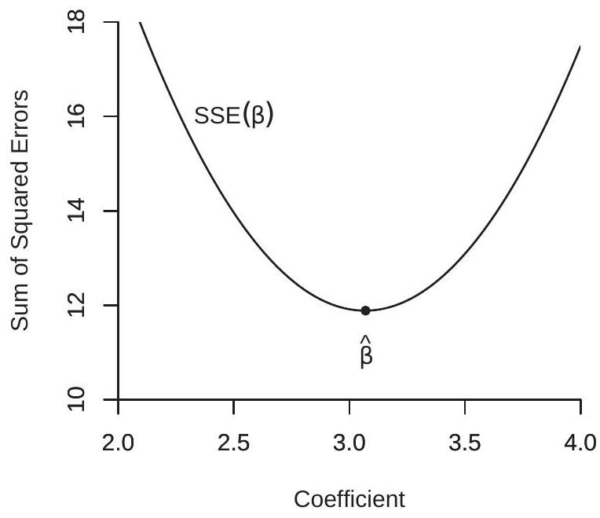
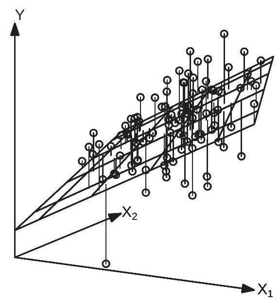
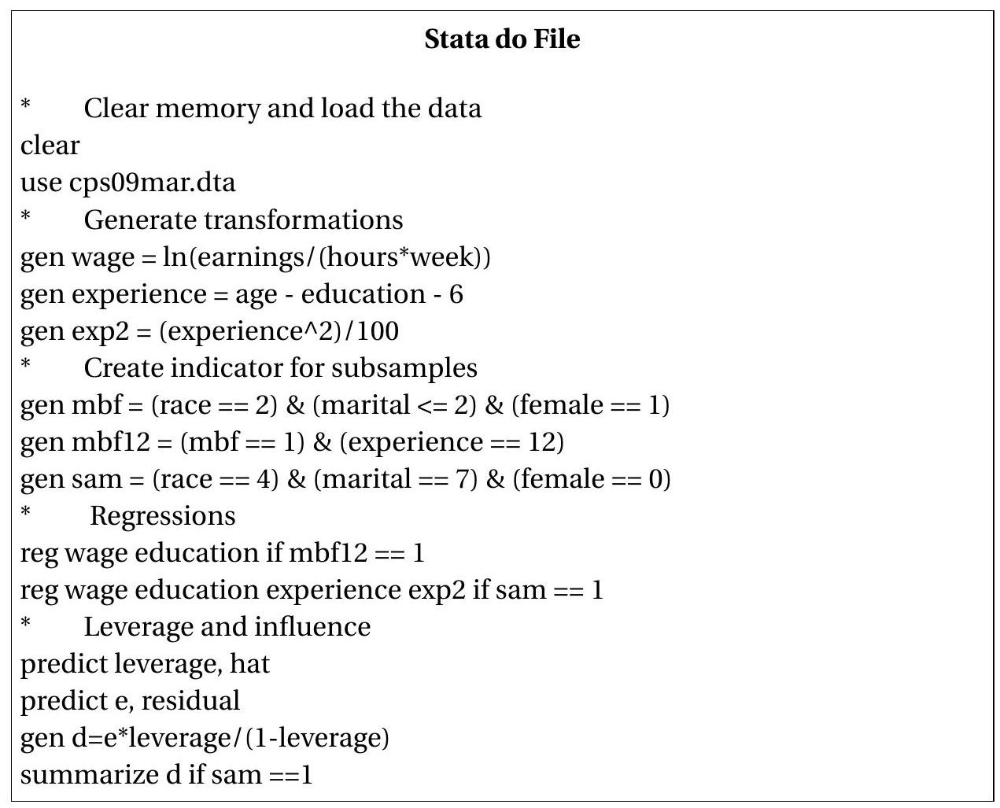

最小二乘代数
介绍
在本章中，我们将介绍流行的最小二乘估计器。大部分讨论都是代数的，分布和推理的问题推迟到后面的章节。
样品
在 \(2.18\) 部分，我们推导并讨论了给定 \(X\) 对随机变量 \((Y, X) \in \mathbb{R} \times \mathbb{R}^{k}\) 的 \(Y\) 的最佳线性预测器，并将其称为线性投影模型。我们现在对估计这个模型的参数感兴趣，特别是投影系数
\[ \beta=\left(\mathbb{E}\left[X X^{\prime}\right]\right)^{-1} \mathbb{E}[X Y] . \]
我们可以从包含 \((Y, X)\) 的联合测量值的样本中估计 \(\beta\)。例如，假设我们有兴趣估计工资方程，我们将使用一个数据集，其中包含工资（或每周收入）、教育、经验（或年龄）和人口特征（性别、种族、位置）的观察结果。一个可能的数据集是当前人口调查 (CPS)，这是一项对美国家庭的调查，其中包括有关就业、收入、教育和人口特征的问题。
从符号上讲，我们希望将观察（实现）与潜在的随机变量区分开来。随机变量是 \((Y, X)\)。观察结果是 \(\left(Y_{i}, X_{i}\right)\)。从研究人员的角度来看，后者是数字。从统计理论的角度来看，我们将它们视为随机变量的实现。对于单个观察，我们附加一个从 1 到 \(n\) 的下标 \(i\)，因此 \(i^{t h}\) 观察是 \(\left(Y_{i}, X_{i}\right)\)。数字 \(n\) 是样本量。数据集或样本是 \(\left\{\left(Y_{i}, X_{i}\right): i=1, \ldots, n\right\}\)。
从经验分析的角度来看，数据集是一组数字。它通常组织为一个表，其中每一列是一个变量，每一行是一个观察值。对于经验分析，数据集是固定的，因为它们是呈现给研究人员的数字。对于统计分析，我们将数据集视为随机的，或者更准确地说是随机过程的实现。
个别观察可以从一个共同的（同质的）分布中提取，也可以从异质的分布中提取。最简单的方法是假设同质性 - 即观察结果是来自相同基础总体 \(F\) 的实现。
假设 3.1 变量 \(\left\{\left(Y_{1}, X_{1}\right), \ldots,\left(Y_{i}, X_{i}\right), \ldots,\left(Y_{n}, X_{n}\right)\right\}\) 同分布；它们来自一个共同的分布 \(F\)。这个假设不需要被视为字面上正确的。相反，它是一种有用的建模设备，因此可以很好地定义诸如 \(\beta\) 之类的参数。这个假设应该被解释为我们在实际观察之前如何先验地看待观察。如果我告诉您我们有一个样本，其中 \(n=59\) 观察值没有按特定顺序设置，那么查看两个观察值（例如 17 和 58 ）是有意义的，因为它们来自相同的分布。我们没有理由期待这两种观察有什么特别之处。
在计量经济学理论中，我们将潜在的共同分布 \(F\) 称为总体。一些作者更喜欢标签数据生成过程（DGP）。您可以将其视为一个理论概念或无限大的潜在人口。相比之下，我们将 \(\left\{\left(Y_{i}, X_{i}\right)\right.\) : \(i=1, \ldots, n\}\) 可用的观察结果称为样本或数据集。在某些情况下，数据集包含所有潜在的观察结果，例如行政税务记录可能包含政治单位中的每个纳税人。即使在这种情况下，我们也可以将观察结果看作是从潜在的无限大群体中随机抽取的，因为这将使我们能够应用统计理论的工具。
线性投影模型适用于随机变量 \((Y, X)\)。这是 2.18 节中描述的概率模型。模型是
\[ Y=X^{\prime} \beta+e \]
其中线性投影系数 \(\beta\) 定义为
\[ \beta=\underset{b \in \mathbb{R}^{k}}{\operatorname{argmin}} S(b), \]
期望平方误差的最小值
\[ S(\beta)=\mathbb{E}\left[\left(Y-X^{\prime} \beta\right)^{2}\right] . \]
该系数具有显式解 (3.1)。
矩估计器
我们想从观测样本中估计 (3.1) 中定义的系数 \(\beta\)。请注意，\(\beta\) 是作为特定总体预期的函数编写的。在这种情况下，适当的估计器是样本矩的相同函数。让我们详细解释一下。
首先，假设我们对具有分布函数 \(F\) 的随机变量 \(Y\) 的总体均值 \(\mu\) 感兴趣
\[ \mu=\mathbb{E}[Y]=\int_{-\infty}^{\infty} y d F(y) . \]
期望 \(\mu\) 是分布 \(F\) 的函数。从 \(F\) 给定 \(n\) 随机变量 \(Y_{i}\) 来估计 \(\mu\)，自然估计量是样本均值
\[ \widehat{\mu}=\bar{Y}=\frac{1}{n} \sum_{i=1}^{n} Y_{i} . \]
请注意，我们使用两种符号来编写它。顶部带有条形的符号 \(\bar{Y}\) 是样本均值的常规符号。带有帽子“\(\wedge\)”的符号 \(\widehat{\mu}\) 在计量经济学中是传统的，用于表示参数 \(\mu\) 的估计量。在这种情况下，\(\bar{Y}\) 是 \(\mu\) 的估计量，所以 \(\widehat{\mu}\) 和 \(\bar{Y}\) 是相同的。样本均值 \(\bar{Y}\) 可以被视为总体均值 (3.5) 的自然模拟，因为对于经验分布，\(\bar{Y}\) 等于期望值 (3.5) - 离散分布将权重 \(\bar{Y}\) 放在每个观察 \(数学12\)。将 \(\bar{Y}\) 作为 \(\bar{Y}\) 的估计量还有其他理由。我们将暂时推迟这些讨论。可以说它是传统的估计量就足够了。现在假设我们对随机向量 \(\bar{Y}\)，比如说 \(\bar{Y}\) 的可能非线性函数的一组总体期望感兴趣。例如，我们可能对 \(\bar{Y}\) 和 \(\bar{Y}\) 的前两个矩感兴趣。在这种情况下，自然估计量是样本均值的向量，
\[ \widehat{\mu}=\frac{1}{n} \sum_{i=1}^{n} h\left(Y_{i}\right) . \]
我们称 \(\widehat{\mu}\) 为 \(\mu\) 的矩估计量。例如，如果 \(h(y)=\left(y, y^{2}\right)^{\prime}\) 那么 \(\widehat{\mu}_{1}=n^{-1} \sum_{i=1}^{n} Y_{i}\) 和 \(\widehat{\mu}_{2}=\) \(n^{-1} \sum_{i=1}^{n} Y_{i}^{2}\)
现在假设我们对一组矩的非线性函数感兴趣。例如，考虑 \(Y\) 的方差
\[ \sigma^{2}=\operatorname{var}[Y]=\mathbb{E}\left[Y^{2}\right]-(\mathbb{E}[Y])^{2} . \]
通常，许多感兴趣的参数可以写成\(Y\) 矩的函数。符号上，\(\beta=g(\mu)\) 和 \(\mu=\mathbb{E}[h(Y)]\)。这里，\(Y\) 是随机变量，\(h(Y)\) 是随机变量的函数（变换），\(\mu\) 是这些函数的期望值。 \(\beta\) 是感兴趣的参数，并且是这些期望的（非线性）函数 \(g(\cdot)\)。
在这种情况下，通过将 \(\mu\) 替换为 \(\widehat{\mu}\) 来获得 \(\beta\) 的自然估计量。因此 \(\widehat{\beta}=g(\widehat{\mu})\)。估计器 \(\widehat{\beta}\) 通常称为插件估计器。我们也将 \(\widehat{\beta}\) 称为 \(\beta\) 的矩或基于矩的估计器，因为它是矩估计器 \(\widehat{\mu}\) 的自然扩展。
以方差 \(\sigma^{2}=\operatorname{var}[Y]\) 为例。它的矩估计量是
\[ \widehat{\sigma}^{2}=\widehat{\mu}_{2}-\widehat{\mu}_{1}^{2}=\frac{1}{n} \sum_{i=1}^{n} Y_{i}^{2}-\left(\frac{1}{n} \sum_{i=1}^{n} Y_{i}\right)^{2} \]
这不是 \(\sigma^{2}\) 唯一可能的估计器（还有著名的偏差校正估计器），但 \(\widehat{\sigma}^{2}\) 是一个简单明了的选择。
最小二乘估计器
线性投影系数 \(\beta\) 在 (3.3) 中定义为 (3.4) 中定义的期望平方误差 \(S(\beta)\) 的最小值。对于给定的 \(\beta\)，预期平方误差是平方误差 \(\left(Y-X^{\prime} \beta\right)^{2}\) 的期望值。 \(S(\beta)\) 的矩估计量是样本平均值：
\[ \widehat{S}(\beta)=\frac{1}{n} \sum_{i=1}^{n}\left(Y_{i}-X_{i}^{\prime} \beta\right)^{2}=\frac{1}{n} \operatorname{SSE}(\beta) \]
在哪里
\[ \operatorname{SSE}(\beta)=\sum_{i=1}^{n}\left(Y_{i}-X_{i}^{\prime} \beta\right)^{2} \]
称为误差平方和函数。
由于 \(\widehat{S}(\beta)\) 是样本平均值，我们可以将其解释为预期平方误差 \(S(\beta)\) 的估计量。将 \(\widehat{S}(\beta)\) 作为 \(\beta\) 的函数来检查 \(S(\beta)\) 如何随 \(\beta\) 变化。由于投影系数使 \(S(\beta)\) 最小化，因此模拟估计器最小化 (3.6)。
我们将估计器 \(\widehat{\beta}\) 定义为 \(\widehat{S}(\beta)\) 的最小化器。
定义 \(3.1\) 最小二乘估计量是 \(\widehat{\beta}=\underset{\beta \in \mathbb{R}^{k}}{\operatorname{argmin}} \widehat{S}(\beta)\)\ \(\widehat{S}(\beta)=\frac{1}{n} \sum_{i=1}^{n}\left(Y_{i}-X_{i}^{\prime} \beta\right)^{2}\)
由于 \(\widehat{S}(\beta)\) 是 \(\operatorname{SSE}(\beta)\) 的比例倍数，我们可以等效地将 \(\widehat{\beta}\) 定义为 \(\operatorname{SSE}(\beta)\) 的最小化器。因此 \(\widehat{\beta}\) 通常被称为 \(\beta\) 的最小二乘 (LS) 估计量。估计器通常也称为普通最小二乘 (OLS) 估计器。有关此标签的起源，请参见下面关于 Adrien-Marie Legendre 的历史讨论。在这里，正如计量经济学中常见的那样，我们在参数 \(\beta\) 上加上一个帽子“\(\wedge\)”，以表明 \(\widehat{\beta}\) 是 \(\widehat{S}(\beta)\) 的样本估计量。这是一个有用的约定。只需看到符号 \(\widehat{S}(\beta)\)，我们就可以立即将其解释为参数 \(\widehat{S}(\beta)\) 的估计量（因为帽子）。有时当我们想明确估计方法时，我们会写 \(\widehat{S}(\beta)\) 来表示它是 OLS 估计量。符号 \(\widehat{S}(\beta)\) 也很常见，其中下标“\(\widehat{S}(\beta)\)”表示估计量取决于样本大小 \(\widehat{S}(\beta)\)。
了解总体参数（例如 \(\beta\)）和样本估计量（例如 \(\widehat{\beta}\)）之间的区别很重要。总体参数 \(\beta\) 是总体的非随机特征，而样本估计量 \(\widehat{\beta}\) 是随机样本的随机特征。 \(\beta\) 是固定的，而 \(\widehat{\beta}\) 因样本而异。
用一个回归器求解最小二乘
为简单起见，我们首先考虑 \(k=1\) 的情况，因此有一个标量回归量 \(X\) 和一个标量系数 \(\beta\)。为了说明，图 3.1(a) 显示了 20 对 \(\left(Y_{i}, X_{i}\right)\) 的散布 \(\operatorname{plot}^{1}\)。
误差平方和 \(\operatorname{SSE}(\beta)\) 是 \(\beta\) 的函数。给定 \(\beta\)，我们通过获取 \(Y_{i}\) 和 \(X_{i} \beta\) 之间的垂直距离来计算“误差”\(Y_{i}-X_{i} \beta\)。这可以在图 3.1(a) 中通过将观测值与直线连接起来的垂直线看出。这些垂直线是错误 \(Y_{i}-X_{i} \beta\)。误差平方和是 20 个平方长度之和。
误差平方和是函数
\[ \operatorname{SSE}(\beta)=\sum_{i=1}^{n}\left(Y_{i}-X_{i} \beta\right)^{2}=\left(\sum_{i=1}^{n} Y_{i}^{2}\right)-2 \beta\left(\sum_{i=1}^{n} X_{i} Y_{i}\right)+\beta^{2}\left(\sum_{i=1}^{n} X_{i}^{2}\right) . \]
这是 \(\beta\) 的二次函数。图 \(3.1\) (b) 在 \([2,4]\) 范围内显示平方误差函数的总和。系数 \(\beta\) 的范围沿 \(x\) 轴。作为 \(\beta\) 函数的误差平方和 \(\operatorname{SSE}(\beta)\) 显示在 \(y\) 轴上。
OLS 估计器 \(\widehat{\beta}\) 最小化了这个函数。从初等代数我们知道二次函数 \(a-2 b x+c x^{2}\) 的最小值是 \(x=b / c\)。因此 \(\operatorname{SSE}(\beta)\) 的最小化器是
\[ \widehat{\beta}=\frac{\sum_{i=1}^{n} X_{i} Y_{i}}{\sum_{i=1}^{n} X_{i}^{2}} \]
例如，图 3.1(b) 中显示的误差平方和函数的最小值是 \(\widehat{\beta}=3.07\)，并标记在 \(\mathrm{x}\) 轴上。
只截取模型是特例 \(X_{i}=1\)。在这种情况下，我们发现
\[ \widehat{\beta}=\frac{\sum_{i=1}^{n} 1 Y_{i}}{\sum_{i=1}^{n} 1^{2}}=\frac{1}{n} \sum_{i=1}^{n} Y_{i}=\bar{Y}, \]
\({ }^{1}\) 观察结果是通过模拟生成的 \(X \sim U[0,1]\) 和 \(Y \sim \mathrm{N}[3 X, 1]\)。

- 与拟合线的偏差

- 平方误差函数之和
图 3.1：使用一个回归器的回归
\(Y_{i}\) 的样本均值。在这里，通常情况下，我们在 \(Y\) 上放置一个“-”条，表示该数量是样本均值。这表明仅截距模型中的 OLS 估计量是样本均值。
从技术上讲，(3.7) 中的估计量 \(\widehat{\beta}\) 只有在分母非零时才存在。因为它是平方和，所以它必然是非负的。因此，如果 \(\sum_{i=1}^{n} X_{i}^{2}>0\)，则 \(\widehat{\beta}\) 存在。
使用多个回归器求解最小二乘
我们现在考虑 \(k>1\) 的情况，因此系数 \(\beta \in \mathbb{R}^{k}\) 是一个向量。
为了说明，图 \(3.2\) 显示了 100 个三元组 \(\left(Y_{i}, X_{1 i}, X_{2 i}\right)\) 的散点图。回归函数 \(x^{\prime} \beta=x_{1} \beta_{1}+x_{2} \beta_{2}\) 是一个二维曲面，如图 3.2 中的平面所示。
误差平方和 \(\operatorname{SSE}(\beta)\) 是向量 \(\beta\) 的函数。对于任何 \(\beta\)，误差 \(Y_{i}-X_{i}^{\prime} \beta\) 是 \(Y_{i}\) 和 \(X_{i}^{\prime} \beta\) 之间的垂直距离。这可以在图 \(3.2\) 中通过将观察结果连接到平面的垂直线看出。在单一回归量的情况下，这些垂直线是错误 \(e_{i}=Y_{i}-\) \(X_{i}^{\prime} \beta\)。误差平方和是 100 个平方长度之和。
误差平方和可以写为
\[ \operatorname{SSE}(\beta)=\sum_{i=1}^{n} Y_{i}^{2}-2 \beta^{\prime} \sum_{i=1}^{n} X_{i} Y_{i}+\beta^{\prime} \sum_{i=1}^{n} X_{i} X_{i}^{\prime} \beta . \]
与单一回归量情况一样，这是 \(\beta\) 中的二次函数。不同之处在于，在多重回归的情况下，这是一个向量值二次函数。为了使误差平方和函数可视化，图 3.3(a) 显示了 \(\operatorname{SSE}(\beta)\)。另一种可视化 3 维表面的方法是使用等高线图。图 3.3(b) 显示了相同 \(\operatorname{SSE}(\beta)\) 函数的等高线图。等高线是 \(\left(\beta_{1}, \beta_{2}\right)\) 空间中的点，其中 \(\operatorname{SSE}(\beta)\) 取相同的值。等高线是椭圆的，因为 \(\operatorname{SSE}(\beta)\) 是二次的。

图 3.2：具有两个变量的回归
最小二乘估计器 \(\widehat{\beta}\) 最小化 \(\operatorname{SSE}(\beta)\)。找到最小值的一种简单方法是求解一阶条件。后者是
\[ 0=\frac{\partial}{\partial \beta} \operatorname{SSE}(\widehat{\beta})=-2 \sum_{i=1}^{n} X_{i} Y_{i}+2 \sum_{i=1}^{n} X_{i} X_{i}^{\prime} \widehat{\beta} \]
我们使用单个表达式编写了这个，但它实际上是一个带有 \(k\) 未知数（\(\widehat{\beta}\) 的元素）的 \(k\) 方程系统。
\(\widehat{\beta}\) 的解可以通过求解 (3.9) 中的 \(k\) 方程组来找到。我们可以使用矩阵代数紧凑地编写此解决方案。将 (3.9) 除以 2 我们得到
\[ \sum_{i=1}^{n} X_{i} X_{i}^{\prime} \widehat{\beta}=\sum_{i=1}^{n} X_{i} Y_{i} . \]
这是一个形式为 \(\boldsymbol{A} \boldsymbol{b}=\boldsymbol{c}\) 的方程组，其中 \(\boldsymbol{A}\) 是 \(k \times k\)，\(\boldsymbol{b}\) 和 \(\boldsymbol{c}\) 是 \(k \times 1\)。解是 \(\boldsymbol{b}=\boldsymbol{A}^{-1} \boldsymbol{c}\)，可以通过将 \(\boldsymbol{A} \boldsymbol{b}=\boldsymbol{c}\) 与 \(\boldsymbol{A}^{-1}\) 预乘并使用矩阵逆属性 \(\boldsymbol{A} \boldsymbol{b}=\boldsymbol{c}\) 来获得。应用于（3.10），我们找到了最小二乘估计量的明确公式
\[ \widehat{\beta}=\left(\sum_{i=1}^{n} X_{i} X_{i}^{\prime}\right)^{-1}\left(\sum_{i=1}^{n} X_{i} Y_{i}\right) . \]
这是（3.3）中定义的最佳线性投影系数\(\beta\)的自然估计量，也可以称为线性投影估计量。

- 平方误差函数之和
.jpg)
- 上证所轮廓
图 3.3：具有两个回归量的 SSE
回想一下，我们声称 (3.11) 中的 \(\widehat{\beta}\) 是 \(\operatorname{SSE}(\beta)\) 的最小值，并通过求解一阶条件找到它。为了完整，我们应该验证二阶条件。我们计算得出
\[ \frac{\partial^{2}}{\partial \beta \partial \beta^{\prime}} \operatorname{SSE}(\beta)=2 \sum_{i=1}^{n} X_{i} X_{i}^{\prime} \]
是一个半正定矩阵。如果实际上是正定的，则满足最小化的二阶条件，在这种情况下 \(\widehat{\beta}\) 是 \(\operatorname{SSE}(\beta)\) 的唯一最小化器。
回到图 \(3.3\) 中显示的误差平方和函数 \(\operatorname{SSE}(\beta)\) 的示例，最小二乘估计器 \(\widehat{\beta}\) 是使该函数最小化的对 \(\left(\widehat{\beta}_{1}, \widehat{\beta}_{2}\right)\)；从视觉上看，它是 3 维图中的低点，在图 3.3(b) 中标记为等高线图的中心点。
取方程 (3.11) 并假设 \(k=1\)。在这种情况下，\(X_{i}\) 是标量，所以 \(X_{i} X_{i}^{\prime}=X_{i}^{2}\)。然后 (3.11) 简化为先前导出的表达式 (3.7)。表达式 (3.11) 是一个符号简单的概括，但需要仔细注意向量和矩阵操作。
或者，等式 (3.1) 将投影系数 \(\beta\) 写为总体矩 \(\boldsymbol{Q}_{X Y}\) 和 \(\boldsymbol{Q}_{X X}\) 的显式函数。他们的矩估计器是样本矩
\[ \begin{aligned} \widehat{\boldsymbol{Q}}_{X Y} &=\frac{1}{n} \sum_{i=1}^{n} X_{i} Y_{i} \\ \widehat{\boldsymbol{Q}}_{X X} &=\frac{1}{n} \sum_{i=1}^{n} X_{i} X_{i}^{\prime} \end{aligned} \]
\(\beta\) 的矩估计器将 (3.1) 中的总体矩替换为样本矩：
\[ \begin{aligned} \widehat{\beta} &=\widehat{\boldsymbol{Q}}_{X X}^{-1} \widehat{\boldsymbol{Q}}_{X Y} \\ &=\left(\frac{1}{n} \sum_{i=1}^{n} X_{i} X_{i}^{\prime}\right)^{-1}\left(\frac{1}{n} \sum_{i=1}^{n} X_{i} Y_{i}\right) \\ &=\left(\sum_{i=1}^{n} X_{i} X_{i}^{\prime}\right)^{-1}\left(\sum_{i=1}^{n} X_{i} Y_{i}\right) \end{aligned} \]
与 (3.11) 相同。
从技术上讲，估计量 \(\widehat{\beta}\) 是唯一的，并且仅当倒置矩阵实际上是可逆的时才等于 (3.11)，当（且仅当）该矩阵是正定时，它才成立。这不包括 \(X_{i}\) 包含冗余回归量的情况。这将在第 3.24 节中进一步讨论。
定理 3.1 如果 \(\sum_{i=1}^{n} X_{i} X_{i}^{\prime}>0\)，最小二乘估计量是唯一的并且等于
\[ \widehat{\beta}=\left(\sum_{i=1}^{n} X_{i} X_{i}^{\prime}\right)^{-1}\left(\sum_{i=1}^{n} X_{i} Y_{i}\right) . \]
阿德里安·玛丽·勒让德
最小二乘法由法国数学家 Adrien-Marie Legendre (1752-1833) 于 1805 年发表。当方程的数量超过未知数的数量时，勒让德提出最小二乘法作为求解方程组的代数问题的解决方案。这是天文测量中一个令人头疼的普遍问题。在勒让德看来，(3.2) 是一组具有 \(k\) 未知数的 \(n\) 方程。由于方程不能精确求解，Legendre 的目标是选择 \(\beta\) 以使误差集尽可能小。他提出了误差平方和的准则，并推导出了上面提出的代数解。正如他所指出的，一阶条件 (3.9) 是具有 \(k\) 未知数的 \(k\) 方程组，可以通过“普通”方法求解。因此该方法被称为普通最小二乘法，直到今天我们仍然使用缩写 OLS 来指代勒让德的估计方法。
插图
我们使用用于计算第 2 章中报告的估计值的数据集来说明实践中的最小二乘估计量。这是 2009 年 3 月的当前人口调查，其中包含有关美国人口的大量信息。该数据集在第 3.22 节中有更详细的描述。在本例中，我们使用已婚（配偶在场）具有 12 年潜在工作经验的黑人女性工薪族的子样本。这个子样本有 20 个观测值 \({ }^{2}\)。
在表 \(3.1\) 中，我们显示观察结果以供参考。每一行都是一个单独的观察，它是一个人的数据。这些列对应于个体的变量（测量值）。第二列是报告的工资（年总收入除以工作时间）。第三列是工资的自然对数。第四栏是受教育年限。第五和第六列是进一步的变换，具体是教育的平方和教育与\(\log\)（工资）的乘积。底行是该列中元素的总和。
表 3.1：来自 CPS 数据集的观察结果
| Observation | wage | \(\log (\) wage) | education | education \(^{2}\) | education \(\times \log (\) wage \()\) |
|---|---|---|---|---|---|
| 1 | \(37.93\) | \(3.64\) | 18 | 324 | \(65.44\) |
| 2 | \(40.87\) | \(3.71\) | 18 | 324 | \(66.79\) |
| 3 | \(14.18\) | \(2.65\) | 13 | 169 | \(34.48\) |
| 4 | \(16.83\) | \(2.82\) | 16 | 256 | \(45.17\) |
| 5 | \(33.17\) | \(3.50\) | 16 | 256 | \(56.03\) |
| 6 | \(29.81\) | \(3.39\) | 18 | 324 | \(61.11\) |
| 7 | \(54.62\) | \(4.00\) | 16 | 256 | \(64.00\) |
| 8 | \(43.08\) | \(3.76\) | 18 | 324 | \(67.73\) |
| 9 | \(14.42\) | \(2.67\) | 12 | 144 | \(32.03\) |
| 10 | \(14.90\) | \(2.70\) | 16 | 256 | \(43.23\) |
| 11 | \(21.63\) | \(3.07\) | 18 | 324 | \(55.44\) |
| 12 | \(11.09\) | \(2.41\) | 16 | 256 | \(38.50\) |
| 13 | \(10.00\) | \(2.30\) | 13 | 169 | \(29.93\) |
| 14 | \(31.73\) | \(3.46\) | 14 | 196 | \(48.40\) |
| 15 | \(11.06\) | \(2.40\) | 12 | 144 | \(28.84\) |
| 16 | \(18.75\) | \(2.93\) | 16 | 256 | \(46.90\) |
| 17 | \(27.35\) | \(3.31\) | 14 | 196 | \(46.32\) |
| 18 | \(24.04\) | \(3.18\) | 16 | 256 | \(50.76\) |
| 19 | \(36.06\) | \(3.59\) | 18 | 324 | \(64.53\) |
| 20 | \(23.08\) | \(3.14\) | 16 | 256 | \(50.22\) |
| Sum | 515 | \(62.64\) | 314 | 5010 | \(995.86\) |
将变量放入标准回归符号中，令 \(Y_{i}\) 为 \(\log (w a g e)\)，\(X_{i}\) 为教育年限和截距。然后从表 \(3.1\) 中的列总和我们有
\[ \sum_{i=1}^{n} X_{i} Y_{i}=\left(\begin{array}{c} 995.86 \\ 62.64 \end{array}\right) \]
和
\[ \sum_{i=1}^{n} X_{i} X_{i}^{\prime}=\left(\begin{array}{cc} 5010 & 314 \\ 314 & 20 \end{array}\right) \]
取逆我们得到
\[ \left(\sum_{i=1}^{n} X_{i} X_{i}^{\prime}\right)^{-1}=\left(\begin{array}{cc} 0.0125 & -0.196 \\ -0.196 & 3.124 \end{array}\right) . \]
\({ }^{2}\) 这个样本是专门选择的，所以它有少量的观察，便于说明。因此通过矩阵乘法
\[ \widehat{\beta}=\left(\begin{array}{cc} 0.0125 & -0.196 \\ -0.196 & 3.124 \end{array}\right)\left(\begin{array}{c} 995.86 \\ 62.64 \end{array}\right)=\left(\begin{array}{c} 0.155 \\ 0.698 \end{array}\right) . \]
在实践中，回归估计 \(\widehat{\beta}\) 是由计算机软件计算的，用户无需执行上面列出的明确步骤。然而，了解最小二乘估计量可以通过简单的代数运算来计算是有用的。如果您的数据位于类似于表 3.1 的电子表格中，则可以通过电子表格操作计算列出的转换（对数、平方、叉积、列和）。然后可以通过矩阵求逆和乘法计算 \(\widehat{\beta}\)。再一次，应用经济学家很少这样做，因为可以使用计算机软件来简化这一过程。
我们经常使用以下格式编写估计方程
\[ \widehat{\log (\text { wage })}=0.155 \text { education }+0.698 \text {. } \]
对估计方程的解释是，每一年的教育都与平均工资增加 \(16 %\) 相关。
估计方程（3.12）的另一个用途是用于预测。假设一个人有 12 年的教育，第二个有 16 年。使用 (3.12) 我们发现第一个人的期望对数工资是
\[ \widehat{\log (\text { wag } e)}=0.155 \times 12+0.698=2.56 \]
第二个
\[ \widehat{\log (\text { wage })}=0.155 \times 16+0.698=3.18 . \]
方程（3.12）被称为二元回归，因为有两个变量。它也称为简单回归，因为只有一个回归量。多元回归有两个或更多回归量，并允许进行更详细的调查。让我们举一个类似于 (3.12) 的例子，但包括所有级别的经验。这次我们使用有 268 个观察值的单身（未婚）亚洲男性的子样本。包括作为回归器的潜在工作经验（经验）及其平方（经验 \({ }^{2} / 100\) ）（我们除以 100 以简化报告），我们获得了估计值
\[ \widehat{\log (\text { wage })}=0.143 \text { education }+0.036 \text { experience }-0.071 \text { experience }^{2} / 100+0.575 \text {. } \]
这些估计表明，在保持经验不变的情况下，每年的平均工资增加了 \(14 %\)。
最小二乘残差
作为估计的副产品，我们定义了拟合值 \(\widehat{Y}_{i}=X_{i}^{\prime} \widehat{\beta}\) 和残差
\[ \widehat{e}_{i}=Y_{i}-\widehat{Y}_{i}=Y_{i}-X_{i}^{\prime} \widehat{\beta} \]
有时 \(\widehat{Y}_{i}\) 被称为预测值，但这是一个误导性标签。拟合值 \(\widehat{Y}_{i}\) 是包括 \(Y_{i}\) 在内的整个样本的函数，因此不能解释为 \(Y_{i}\) 的有效预测。因此，将 \(\widehat{Y}_{i}\) 描述为拟合值而不是预测值更准确。
注意 \(Y_{i}=\widehat{Y}_{i}+\widehat{e}_{i}\) 和
\[ Y_{i}=X_{i}^{\prime} \widehat{\beta}+\widehat{e}_{i} . \]
我们区分了误差 \(e_{i}\) 和残差 \(\widehat{e}_{i}\)。误差 \(e_{i}\) 是不可观察的，而残差 \(\widehat{e}_{i}\) 是一个估计量。这两个变量经常被错误标记，这可能会导致混淆。等式 (3.9) 意味着
\[ \sum_{i=1}^{n} X_{i} \widehat{e}_{i}=0 . \]
要通过直接计算看到这一点，使用 (3.14) 和 (3.11)，
\[ \begin{aligned} \sum_{i=1}^{n} X_{i} \widehat{e}_{i} &=\sum_{i=1}^{n} X_{i}\left(Y_{i}-X_{i}^{\prime} \widehat{\beta}\right) \\ &=\sum_{i=1}^{n} X_{i} Y_{i}-\sum_{i=1}^{n} X_{i} X_{i}^{\prime} \widehat{\beta} \\ &=\sum_{i=1}^{n} X_{i} Y_{i}-\sum_{i=1}^{n} X_{i} X_{i}^{\prime}\left(\sum_{i=1}^{n} X_{i} X_{i}^{\prime}\right)^{-1}\left(\sum_{i=1}^{n} X_{i} Y_{i}\right) \\ &=\sum_{i=1}^{n} X_{i} Y_{i}-\sum_{i=1}^{n} X_{i} Y_{i}=0 . \end{aligned} \]
当 \(X_{i}\) 包含一个常数时， (3.16) 的含义是
\[ \frac{1}{n} \sum_{i=1}^{n} \widehat{e}_{i}=0 . \]
因此，残差的样本均值为零，回归量和残差之间的样本相关性为零。这些是代数结果，适用于所有线性回归估计。
贬低回归者
有时将常数与其他回归量分开并将线性投影方程写成格式是有用的
\[ Y_{i}=X_{i}^{\prime} \beta+\alpha+e_{i} \]
其中 \(\alpha\) 是截距，\(X_{i}\) 不包含常数。最小二乘估计和残差可以写成 \(Y_{i}=X_{i}^{\prime} \widehat{\beta}+\widehat{\alpha}+\widehat{e}_{i}\)。
在这种情况下（3.16）可以写成方程组
\[ \begin{array}{r} \sum_{i=1}^{n}\left(Y_{i}-X_{i}^{\prime} \widehat{\beta}-\widehat{\alpha}\right)=0 \\ \sum_{i=1}^{n} X_{i}\left(Y_{i}-X_{i}^{\prime} \widehat{\beta}-\widehat{\alpha}\right)=0 . \end{array} \]
第一个方程意味着
\[ \widehat{\alpha}=\bar{Y}-\bar{X}^{\prime} \widehat{\beta} . \]
从我们得到的秒中减去
\[ \sum_{i=1}^{n} X_{i}\left(\left(Y_{i}-\bar{Y}\right)-\left(X_{i}-\bar{X}\right)^{\prime} \widehat{\beta}\right)=0 . \]
求解 \(\widehat{\beta}\) 我们发现
\[ \begin{aligned} \widehat{\beta} &=\left(\sum_{i=1}^{n} X_{i}\left(X_{i}-\bar{X}\right)^{\prime}\right)^{-1}\left(\sum_{i=1}^{n} X_{i}\left(Y_{i}-\bar{Y}\right)\right) \\ &=\left(\sum_{i=1}^{n}\left(X_{i}-\bar{X}\right)\left(X_{i}-\bar{X}\right)^{\prime}\right)^{-1}\left(\sum_{i=1}^{n}\left(X_{i}-\bar{X}\right)\left(Y_{i}-\bar{Y}\right)\right) . \end{aligned} \]
因此，斜率系数的 OLS 估计量是具有退化数据且没有截距的 OLS。
表示 (3.18) 被称为最小二乘估计量的退化公式。
矩阵表示法模型
对于许多目的，包括计算，用矩阵表示法编写模型和统计数据很方便。 \(n\) 线性方程 \(Y_{i}=X_{i}^{\prime} \beta+e_{i}\) 构成了一个 \(n\) 方程组。我们可以将这些 \(n\) 方程堆叠在一起作为
\[ \begin{aligned} &Y_{1}=X_{1}^{\prime} \beta+e_{1} \\ &Y_{2}=X_{2}^{\prime} \beta+e_{2} \\ &\vdots \\ &Y_{n}=X_{n}^{\prime} \beta+e_{n} . \end{aligned} \]
定义
\[ \boldsymbol{Y}=\left(\begin{array}{c} Y_{1} \\ Y_{2} \\ \vdots \\ Y_{n} \end{array}\right), \quad \boldsymbol{X}=\left(\begin{array}{c} X_{1}^{\prime} \\ X_{2}^{\prime} \\ \vdots \\ X_{n}^{\prime} \end{array}\right), \quad \boldsymbol{e}=\left(\begin{array}{c} e_{1} \\ e_{2} \\ \vdots \\ e_{n} \end{array}\right) \]
观察 \(\boldsymbol{Y}\) 和 \(\boldsymbol{e}\) 是 \(n \times 1\) 向量，\(\boldsymbol{X}\) 是 \(n \times k\) 矩阵。 \(n\) 方程组可以紧凑地写成单个方程
\[ \boldsymbol{Y}=\boldsymbol{X} \beta+\boldsymbol{e} . \]
样本总和可以用矩阵表示法编写。例如
\[ \begin{aligned} &\sum_{i=1}^{n} X_{i} X_{i}^{\prime}=\boldsymbol{X}^{\prime} \boldsymbol{X} \\ &\sum_{i=1}^{n} X_{i} Y_{i}=\boldsymbol{X}^{\prime} \boldsymbol{Y} . \end{aligned} \]
因此最小二乘估计量可以写成
\[ \widehat{\beta}=\left(\boldsymbol{X}^{\prime} \boldsymbol{X}\right)^{-1}\left(\boldsymbol{X}^{\prime} \boldsymbol{Y}\right) . \]
(3.15) 的矩阵版本和 (3.19) 的估计版本是
\[ \boldsymbol{Y}=\boldsymbol{X} \widehat{\beta}+\widehat{\boldsymbol{e}} . \]
等价的残差向量是
\[ \widehat{\boldsymbol{e}}=\boldsymbol{Y}-\boldsymbol{X} \widehat{\beta} \]
使用残差向量，我们可以将 (3.16) 写为
\[ \boldsymbol{X}^{\prime} \widehat{\boldsymbol{e}}=0 \]
将误差平方和标准写为
\[ \operatorname{SSE}(\beta)=(\boldsymbol{Y}-\boldsymbol{X} \beta)^{\prime}(\boldsymbol{Y}-\boldsymbol{X} \beta) . \]
使用矩阵表示法，我们对大多数估计器都有简单的表达式。这对于计算机编程特别方便，因为大多数语言都允许矩阵表示法和操作。定理 3.2 重要的矩阵表达式
\[ \begin{aligned} \widehat{\beta} &=\left(\boldsymbol{X}^{\prime} \boldsymbol{X}\right)^{-1}\left(\boldsymbol{X}^{\prime} \boldsymbol{Y}\right) \\ \widehat{\boldsymbol{e}} &=\boldsymbol{Y}-\boldsymbol{X} \widehat{\beta} \\ \boldsymbol{X}^{\prime} \widehat{\boldsymbol{e}} &=0 . \end{aligned} \]
早期使用矩阵
已知最早使用矩阵方法求解联立系统的处理方法见于公元前 \(10^{\text {th }}\) 至 \(2^{\text {nd }}\) 世纪几代学者所著的《数学艺术九章》的第 8 章。
投影矩阵
定义矩阵
\[ \boldsymbol{P}=\boldsymbol{X}\left(\boldsymbol{X}^{\prime} \boldsymbol{X}\right)^{-1} \boldsymbol{X}^{\prime} \]
请注意
\[ \boldsymbol{P} \boldsymbol{X}=\boldsymbol{X}\left(\boldsymbol{X}^{\prime} \boldsymbol{X}\right)^{-1} \boldsymbol{X}^{\prime} \boldsymbol{X}=\boldsymbol{X} . \]
这是投影矩阵的属性。更一般地，对于任何矩阵 \(\boldsymbol{Z}\) 可以写成 \(\boldsymbol{Z}=\boldsymbol{X} \boldsymbol{\Gamma}\) 对于某个矩阵 \(\Gamma\) （我们说 \(\boldsymbol{Z}\) 位于 \(\boldsymbol{X}\) 的范围空间中），然后
\[ \boldsymbol{P Z}=\boldsymbol{P} \boldsymbol{X} \boldsymbol{\Gamma}=\boldsymbol{X}\left(\boldsymbol{X}^{\prime} \boldsymbol{X}\right)^{-1} \boldsymbol{X}^{\prime} \boldsymbol{X} \boldsymbol{\Gamma}=\boldsymbol{X} \boldsymbol{\Gamma}=\boldsymbol{Z} . \]
举一个重要的例子，如果我们将矩阵 \(\boldsymbol{X}\) 划分为两个矩阵 \(\boldsymbol{X}_{1}\) 和 \(\boldsymbol{X}_{2}\)，那么 \(\boldsymbol{X}=\) 和 \(\left[\begin{array}{ll}\boldsymbol{X}_{1} & \boldsymbol{X}_{2}\end{array}\right]\) 然后是 \(\boldsymbol{P} \boldsymbol{X}_{1}=\boldsymbol{X}_{1}\)。 （见练习 3.7。）
投影矩阵 \(\boldsymbol{P}\) 具有幂等的代数性质：\(\boldsymbol{P} \boldsymbol{P}=\boldsymbol{P}\)。见下文定理 3.3.2。有关投影矩阵的一般属性，请参见第 A.11 节。
矩阵 \(\boldsymbol{P}\) 在最小二乘回归中创建拟合值：
\[ \boldsymbol{P} \boldsymbol{Y}=\boldsymbol{X}\left(\boldsymbol{X}^{\prime} \boldsymbol{X}\right)^{-1} \boldsymbol{X}^{\prime} \boldsymbol{Y}=\boldsymbol{X} \widehat{\boldsymbol{\beta}}=\widehat{\boldsymbol{Y}} \text {. } \]
由于这个属性，\(\boldsymbol{P}\) 也被称为帽子矩阵。
当 \(X=\mathbf{1}_{n}\) 是一个由 1 组成的 \(n\) 向量时，会出现一个投影矩阵的特殊示例。然后
\[ \boldsymbol{P}=\mathbf{1}_{n}\left(\mathbf{1}_{n}^{\prime} \mathbf{1}_{n}\right)^{-1} \mathbf{1}_{n}^{\prime}=\frac{1}{n} \mathbf{1}_{n} \mathbf{1}_{n}^{\prime} . \]
请注意，在这种情况下
\[ \boldsymbol{P} \boldsymbol{Y}=\mathbf{1}_{n}\left(\mathbf{1}_{n}^{\prime} \mathbf{1}_{n}\right)^{-1} \mathbf{1}_{n}^{\prime} \boldsymbol{Y}=\mathbf{1}_{n} \bar{Y} \]
创建一个 \(n\)-vector，其元素是样本均值 \(\bar{Y}\)。
投影矩阵 \(\boldsymbol{P}\) 经常出现在最小二乘回归的代数运算中。该矩阵具有以下重要性质。定理 3.3 任何 \(n \times k \boldsymbol{X}\) 与 \(n \geq\) \(k\) 的投影矩阵 \(\boldsymbol{P}=\boldsymbol{X}\left(\boldsymbol{X}^{\prime} \boldsymbol{X}\right)^{-1} \boldsymbol{X}^{\prime}\) 具有以下代数性质。
\(\boldsymbol{P}\) 是对称的 \(\left(\boldsymbol{P}^{\prime}=\boldsymbol{P}\right)\)。
\(\boldsymbol{P}\) 是幂等的 \((\boldsymbol{P P}=\boldsymbol{P})\)。
\(\operatorname{tr} \boldsymbol{P}=k\)。
\(\boldsymbol{P}\) 的特征值为 1 和 0 。
\(\boldsymbol{P}\) 的 \(k\) 特征值等于 1 和 \(n-k\) 等于 0 。
\(\operatorname{rank}(\boldsymbol{P})=k\)。
我们通过证明定理 3.3 中的主张来结束本节。第 1 部分成立，因为
\[ \begin{aligned} \boldsymbol{P}^{\prime} &=\left(\boldsymbol{X}\left(\boldsymbol{X}^{\prime} \boldsymbol{X}\right)^{-1} \boldsymbol{X}^{\prime}\right)^{\prime} \\ &=\left(\boldsymbol{X}^{\prime}\right)^{\prime}\left(\left(\boldsymbol{X}^{\prime} \boldsymbol{X}\right)^{-1}\right)^{\prime}(\boldsymbol{X})^{\prime} \\ &=\boldsymbol{X}\left(\left(\boldsymbol{X}^{\prime} \boldsymbol{X}\right)^{\prime}\right)^{-1} \boldsymbol{X}^{\prime} \\ &=\boldsymbol{X}\left((\boldsymbol{X})^{\prime}\left(\boldsymbol{X}^{\prime}\right)^{\prime}\right)^{-1} \boldsymbol{X}^{\prime}=\boldsymbol{P} . \end{aligned} \]
为了建立第 2 部分，\(\boldsymbol{P X}=\boldsymbol{X}\) 的事实意味着
\[ \boldsymbol{P} \boldsymbol{P}=\boldsymbol{P} \boldsymbol{X}\left(\boldsymbol{X}^{\prime} \boldsymbol{X}\right)^{-1} \boldsymbol{X}^{\prime}=\boldsymbol{X}\left(\boldsymbol{X}^{\prime} \boldsymbol{X}\right)^{-1} \boldsymbol{X}^{\prime}=\boldsymbol{P} \]
如声称的那样。对于第 3 部分，
\[ \operatorname{tr} \boldsymbol{P}=\operatorname{tr}\left(\boldsymbol{X}\left(\boldsymbol{X}^{\prime} \boldsymbol{X}\right)^{-1} \boldsymbol{X}^{\prime}\right)=\operatorname{tr}\left(\left(\boldsymbol{X}^{\prime} \boldsymbol{X}\right)^{-1} \boldsymbol{X}^{\prime} \boldsymbol{X}\right)=\operatorname{tr}\left(\boldsymbol{I}_{k}\right)=k . \]
跟踪算子的定义和属性见附录 A.5。
附录 A.11 表明第 4 部分适用于任何幂等矩阵。对于第 5 部分，由于 \(\operatorname{tr} \boldsymbol{P}\) 等于第 3 部分的 \(n\) 特征值和 \(\operatorname{tr} \boldsymbol{P}=k\) 之和，因此有 \(k\) 特征值等于 1，其余 \(n-k\) 等于 0。
对于第 6 部分，观察 \(\boldsymbol{P}\) 是半正定的，因为它的特征值都是非负的。根据定理 A.4.5，它的秩等于正特征值的数量，即声称的 \(k\)。
歼灭者矩阵
定义
\[ \boldsymbol{M}=\boldsymbol{I}_{n}-\boldsymbol{P}=\boldsymbol{I}_{n}-\boldsymbol{X}\left(\boldsymbol{X}^{\prime} \boldsymbol{X}\right)^{-1} \boldsymbol{X}^{\prime} \]
其中 \(\boldsymbol{I}_{n}\) 是 \(n \times n\) 单位矩阵。注意
\[ \boldsymbol{M} \boldsymbol{X}=\left(\boldsymbol{I}_{n}-\boldsymbol{P}\right) \boldsymbol{X}=\boldsymbol{X}-\boldsymbol{P} \boldsymbol{X}=\boldsymbol{X}-\boldsymbol{X}=0 . \]
因此 \(\boldsymbol{M}\) 和 \(\boldsymbol{X}\) 是正交的。我们称 \(\boldsymbol{M}\) 为歼灭矩阵，因为对于 \(\boldsymbol{X}\) 的范围空间中的任何矩阵 \(\boldsymbol{Z}\)，那么
\[ M Z=Z-P Z=0 . \]
例如，\(\boldsymbol{M} \boldsymbol{X}_{1}=0\) 表示 \(\boldsymbol{X}\) 和 \(\boldsymbol{M P}=0\) 的任何子组件 \(\boldsymbol{X}_{1}\)（参见练习 3.7）。
湮没矩阵 \(\boldsymbol{M}\) 与 \(\boldsymbol{P}\) 具有相似的性质，包括 \(\boldsymbol{M}\) 是对称的 \(\left(\boldsymbol{M}^{\prime}=\boldsymbol{M}\right)\) 和幂等的 \((\boldsymbol{M} M=\boldsymbol{M})\)。因此它是一个投影矩阵。与定理 3.3.3 类似，我们可以计算
\[ \operatorname{tr} M=n-k . \]
（见习题 3.9。）一个暗示是 \(\boldsymbol{M}\) 的秩是 \(n-k\)。
\(\boldsymbol{P}\) 创建拟合值，\(\boldsymbol{M}\) 创建最小二乘残差：
\[ M Y=Y-P Y=Y-X \widehat{\beta}=\widehat{\boldsymbol{e}} . \]
如上一节所述，投影矩阵的一个特殊示例出现在 \(\boldsymbol{X}=\mathbf{1}_{n}\) 是一个由 1 组成的 \(n\)-vector 时，因此 \(\boldsymbol{P}=\mathbf{1}_{n}\left(\mathbf{1}_{n}^{\prime} \mathbf{1}_{n}\right)^{-1} \mathbf{1}_{n}^{\prime}\).相关的湮没矩阵是
\[ \boldsymbol{M}=\boldsymbol{I}_{n}-\boldsymbol{P}=\boldsymbol{I}_{n}-\mathbf{1}_{n}\left(\mathbf{1}_{n}^{\prime} \mathbf{1}_{n}\right)^{-1} \mathbf{1}_{n}^{\prime} . \]
\(\boldsymbol{P}\) 创建样本均值向量，\(\boldsymbol{M}\) 创建贬值值：
\[ \boldsymbol{M Y}=\boldsymbol{Y}-\mathbf{1}_{n} \bar{Y} . \]
为简单起见，我们通常将右侧写为 \(Y-\bar{Y}\)。 \(i^{t h}\) 元素是 \(Y_{i}-\bar{Y}\)，\(Y_{i}\) 的贬值
我们还可以使用 (3.23) 为残差向量写一个替代表达式。将 \(\boldsymbol{Y}=\) \(\boldsymbol{X} \beta+\boldsymbol{e}\) 代入 \(\widehat{\boldsymbol{e}}=\boldsymbol{M} \boldsymbol{Y}\) 并使用 \(\boldsymbol{M} \boldsymbol{X}=\mathbf{0}\) 我们发现
\[ \widehat{\boldsymbol{e}}=\boldsymbol{M} \boldsymbol{Y}=\boldsymbol{M}(\boldsymbol{X} \beta+\boldsymbol{e})=\boldsymbol{M} \boldsymbol{e} \]
它不依赖于回归系数 \(\beta\)。
误差方差的估计
误差方差 \(\sigma^{2}=\mathbb{E}\left[e^{2}\right]\) 是矩，因此自然估计量是矩估计量。如果观察到 \(e_{i}\)，我们将估计 \(\sigma^{2}\)
\[ \widetilde{\sigma}^{2}=\frac{1}{n} \sum_{i=1}^{n} e_{i}^{2} . \]
但是，这是不可行的，因为没有观察到 \(e_{i}\)。在这种情况下，通常采用两步法进行估计。第一步计算残差\(\widehat{e}_{i}\)，然后我们将表达式（3.25）中的\(\widehat{e}_{i}\)代入\(e_{i}\)，得到可行估计量
\[ \widehat{\sigma}^{2}=\frac{1}{n} \sum_{i=1}^{n} \widehat{e}_{i}^{2} . \]
在矩阵表示法中，我们可以将 (3.25) 和 (3.26) 写为 \(\widetilde{\sigma}^{2}=n^{-1} \boldsymbol{e}^{\prime} \boldsymbol{e}\) 和
\[ \widehat{\sigma}^{2}=n^{-1} \widehat{\boldsymbol{e}}^{\prime} \widehat{\boldsymbol{e}} . \]
回忆 (3.23) 和 (3.24) 中的表达式 \(\widehat{\boldsymbol{e}}=\boldsymbol{M} \boldsymbol{Y}=\boldsymbol{M} \boldsymbol{e}\)。应用于 (3.27) 我们发现
\[ \widehat{\sigma}^{2}=n^{-1} \widehat{\boldsymbol{e}}^{\prime} \widehat{\boldsymbol{e}}=n^{-1} \boldsymbol{e}^{\prime} \boldsymbol{M M} \boldsymbol{M}=n^{-1} \boldsymbol{e}^{\prime} \boldsymbol{M} \boldsymbol{e} \]
第三个相等，因为 \(M M=M\)。
一个有趣的暗示是
\[ \widetilde{\sigma}^{2}-\widehat{\sigma}^{2}=n^{-1} \boldsymbol{e}^{\prime} \boldsymbol{e}-n^{-1} \boldsymbol{e}^{\prime} \boldsymbol{M} \boldsymbol{e}=n^{-1} \boldsymbol{e}^{\prime} \boldsymbol{P} \boldsymbol{e} \geq 0 . \]
最后的不等式成立，因为 \(\boldsymbol{P}\) 是半正定的，而 \(\boldsymbol{e}^{\prime} \boldsymbol{P} \boldsymbol{e}\) 是二次形式。这表明可行估计量 \(\widehat{\sigma}^{2}\) 在数值上小于理想化估计量 (3.25)。
方差分析
另一种写法（3.23）是
\[ \boldsymbol{Y}=\boldsymbol{P} \boldsymbol{Y}+\boldsymbol{M} \boldsymbol{Y}=\widehat{\boldsymbol{Y}}+\widehat{\boldsymbol{e}} . \]
这种分解是正交的，即
\[ \widehat{\boldsymbol{Y}}^{\prime} \widehat{\boldsymbol{e}}=(\boldsymbol{P} \boldsymbol{Y})^{\prime}(\boldsymbol{M} \boldsymbol{Y})=\boldsymbol{Y}^{\prime} \boldsymbol{P} \boldsymbol{M} \boldsymbol{Y}=0 . \]
它遵循
\[ \boldsymbol{Y}^{\prime} \boldsymbol{Y}=\widehat{\boldsymbol{Y}}^{\prime} \widehat{\boldsymbol{Y}}+2 \widehat{\boldsymbol{Y}}^{\prime} \widehat{\boldsymbol{e}}+\widehat{\boldsymbol{e}}^{\prime} \widehat{\boldsymbol{e}}=\widehat{\boldsymbol{Y}}^{\prime} \widehat{\boldsymbol{Y}}+\widehat{\boldsymbol{e}}^{\prime} \widehat{\boldsymbol{e}} \]
或者
\[ \sum_{i=1}^{n} Y_{i}^{2}=\sum_{i=1}^{n} \widehat{Y}_{i}^{2}+\sum_{i=1}^{n} \widehat{e}_{i}^{2} \]
从 (3.29) 的两边减去 \(\bar{Y}\)，我们得到
\[ \boldsymbol{Y}-\mathbf{1}_{n} \bar{Y}=\widehat{\boldsymbol{Y}}-\mathbf{1}_{n} \bar{Y}+\widehat{\boldsymbol{e}} \]
当 \(X\) 包含一个常数时，这种分解也是正交的，如
\[ \left(\widehat{\boldsymbol{Y}}-\mathbf{1}_{n} \bar{Y}\right)^{\prime} \widehat{\boldsymbol{e}}=\widehat{\boldsymbol{Y}}^{\prime} \widehat{\boldsymbol{e}}-\bar{Y} \mathbf{1}_{n}^{\prime} \widehat{\boldsymbol{e}}=0 \]
根据（3.17）。它遵循
\[ \left(\boldsymbol{Y}-\mathbf{1}_{n} \bar{Y}\right)^{\prime}\left(\boldsymbol{Y}-\mathbf{1}_{n} \bar{Y}\right)=\left(\widehat{\boldsymbol{Y}}-\mathbf{1}_{n} \bar{Y}\right)^{\prime}\left(\widehat{\boldsymbol{Y}}-\mathbf{1}_{n} \bar{Y}\right)+\widehat{\boldsymbol{e}}^{\prime} \widehat{\boldsymbol{e}} \]
或者
\[ \sum_{i=1}^{n}\left(Y_{i}-\bar{Y}\right)^{2}=\sum_{i=1}^{n}\left(\widehat{Y}_{i}-\bar{Y}\right)^{2}+\sum_{i=1}^{n} \widehat{e}_{i}^{2} . \]
这通常称为最小二乘回归的方差分析公式。
一个常见的统计数据是决定系数或 R 平方：
\[ R^{2}=\frac{\sum_{i=1}^{n}\left(\widehat{Y}_{i}-\bar{Y}\right)^{2}}{\sum_{i=1}^{n}\left(Y_{i}-\bar{Y}\right)^{2}}=1-\frac{\sum_{i=1}^{n} \widehat{e}_{i}^{2}}{\sum_{i=1}^{n}\left(Y_{i}-\bar{Y}\right)^{2}} . \]
它通常被描述为“由最小二乘拟合解释的 \(Y\) 的样本方差的分数”。 \(R^{2}\) 是回归拟合的粗略度量。我们有更好的拟合度量，但这些需要统计（不仅仅是代数）分析，我们稍后会回到这些问题。 \(R^{2}\) 的一个缺陷是当回归变量添加到回归时它会增加（参见练习 3.16），因此“拟合”总是可以通过增加回归变量的数量来增加。
Wright (1921) 引入了决定系数。
预测
可视化最小二乘拟合的一种方法是作为投影操作。
将回归矩阵写为 \(\boldsymbol{X}=\left[\boldsymbol{X}_{1} \boldsymbol{X}_{2} \ldots \boldsymbol{X}_{k}\right]\)，其中 \(\boldsymbol{X}_{j}\) 是 \(\boldsymbol{X}\) 的 \(j^{t h}\) 列。 \(\boldsymbol{X}\) 的范围空间 \(\mathscr{R}(\boldsymbol{X})\) 是由列的所有线性组合组成的空间 \(\boldsymbol{X}_{1}, \boldsymbol{X}_{2}, \ldots, \boldsymbol{X}_{k} . \mathscr{R}(\boldsymbol{X})\) 是 \(\mathbb{R}^{n}\) 中包含的 \(k\) 维曲面。如果 \(\boldsymbol{X}=\left[\boldsymbol{X}_{1} \boldsymbol{X}_{2} \ldots \boldsymbol{X}_{k}\right]\) 则 \(\boldsymbol{X}=\left[\boldsymbol{X}_{1} \boldsymbol{X}_{2} \ldots \boldsymbol{X}_{k}\right]\) 是平面。运算符 \(\boldsymbol{X}=\left[\boldsymbol{X}_{1} \boldsymbol{X}_{2} \ldots \boldsymbol{X}_{k}\right]\) 将向量投影到 \(\boldsymbol{X}=\left[\boldsymbol{X}_{1} \boldsymbol{X}_{2} \ldots \boldsymbol{X}_{k}\right]\) 上。拟合值 \(\boldsymbol{X}=\left[\boldsymbol{X}_{1} \boldsymbol{X}_{2} \ldots \boldsymbol{X}_{k}\right]\) 是 \(\boldsymbol{X}=\left[\boldsymbol{X}_{1} \boldsymbol{X}_{2} \ldots \boldsymbol{X}_{k}\right]\) 到 \(\boldsymbol{X}=\left[\boldsymbol{X}_{1} \boldsymbol{X}_{2} \ldots \boldsymbol{X}_{k}\right]\) 的投影。
可视化检查图 3.4。这将显示 \(n=3\) 和 \(k=2\) 的情况。显示的是三个向量 \(\boldsymbol{Y}, \boldsymbol{X}_{1}\) 和 \(\boldsymbol{X}_{2}\)，它们是 \(\mathbb{R}^{3}\) 的每个元素。 \(\boldsymbol{X}_{1}\) 和 \(\boldsymbol{X}_{2}\) 创建的平面是范围空间 \(\mathscr{R}(\boldsymbol{X})\)。回归拟合值是 \(\boldsymbol{X}_{1}\) 和 \(n=3\) 的线性组合，因此位于该平面上。拟合值 \(n=3\) 是该平面上最接近 \(n=3\) 的向量。残差 \(n=3\) 是两者之差。向量 \(n=3\) 和 \(n=3\) 之间的角度是 \(n=3\)，因此它们是正交的，如图所示。

图 3.4：\(\boldsymbol{Y}\) 到 \(\boldsymbol{X}_{1}\) 和 \(\boldsymbol{X}_{2}\) 的投影
回归组件
分区 \(\boldsymbol{X}=\left[\begin{array}{ll}\boldsymbol{X}_{1} & \boldsymbol{X}_{2}\end{array}\right]\) 和 \(\beta=\left(\beta_{1}, \beta_{2}\right)\)。回归模型可以写成
\[ \boldsymbol{Y}=\boldsymbol{X}_{1} \beta_{1}+\boldsymbol{X}_{2} \beta_{2}+\boldsymbol{e} . \]
\(\beta=\left(\beta_{1}^{\prime}, \beta_{2}^{\prime}\right)^{\prime}\) 的 OLS 估计量是通过 \(\boldsymbol{Y}\) 对 \(\boldsymbol{X}=\left[\boldsymbol{X}_{1} \boldsymbol{X}_{2}\right]\) 的回归得到的，可以写为
\[ \boldsymbol{Y}=\boldsymbol{X} \widehat{\beta}+\widehat{\boldsymbol{e}}=\boldsymbol{X}_{1} \widehat{\boldsymbol{\beta}}_{1}+\boldsymbol{X}_{2} \widehat{\boldsymbol{\beta}}_{2}+\widehat{\boldsymbol{e}} . \]
我们对 \(\widehat{\beta}_{1}\) 和 \(\widehat{\beta}_{2}\) 的代数表达式感兴趣。
让我们首先关注 \(\widehat{\beta}_{1}\)。根据定义，最小二乘估计量是通过联合最小化找到的
\[ \left(\widehat{\beta}_{1}, \widehat{\beta}_{2}\right)=\underset{\beta_{1}, \beta_{2}}{\operatorname{argmin}} \operatorname{SSE}\left(\beta_{1}, \beta_{2}\right) \]
在哪里
\[ \operatorname{SSE}\left(\beta_{1}, \beta_{2}\right)=\left(\boldsymbol{Y}-\boldsymbol{X}_{1} \beta_{1}-\boldsymbol{X}_{2} \beta_{2}\right)^{\prime}\left(\boldsymbol{Y}-\boldsymbol{X}_{1} \beta_{1}-\boldsymbol{X}_{2} \beta_{2}\right) . \]
\(\widehat{\beta}_{1}\) 的等价表达式可以通过集中（嵌套最小化）获得。解 (3.33) 可以写成
\[ \widehat{\beta}_{1}=\underset{\beta_{1}}{\operatorname{argmin}}\left(\min _{\beta_{2}} \operatorname{SSE}\left(\beta_{1}, \beta_{2}\right)\right) . \]
内部表达式 \(\min _{\beta_{2}} \operatorname{SSE}\left(\beta_{1}, \beta_{2}\right)\) 在 \(\beta_{1}\) 固定的同时最小化了 \(\beta_{2}\)。它是给定 \(\beta_{1}\) 的最小可能误差平方和。外部最小化 \(\operatorname{argmin}_{\beta_{1}}\) 找到系数 \(\beta_{1}\)，它使“给定 \(\beta_{1}\) 的最小可能平方误差总和”最小化。这意味着 (3.33) 和 (3.34) 中定义的 \(\widehat{\beta}_{1}\) 在代数上是相同的。
检查 (3.34) 中的内部最小化问题。这只是 \(\boldsymbol{Y}-\boldsymbol{X}_{1} \beta_{1}\) 对 \(\boldsymbol{X}_{2}\) 的最小二乘回归。这有解决方案
\[ \underset{\beta_{2}}{\operatorname{argmin}} \operatorname{SSE}\left(\beta_{1}, \beta_{2}\right)=\left(\boldsymbol{X}_{2}^{\prime} \boldsymbol{X}_{2}\right)^{-1}\left(\boldsymbol{X}_{2}^{\prime}\left(\boldsymbol{Y}-\boldsymbol{X}_{1} \beta_{1}\right)\right) \]
有残差
\[ \begin{aligned} \boldsymbol{Y}-\boldsymbol{X}_{1} \beta_{1}-\boldsymbol{X}_{2}\left(\boldsymbol{X}_{2}^{\prime} \boldsymbol{X}_{2}\right)^{-1}\left(\boldsymbol{X}_{2}^{\prime}\left(\boldsymbol{Y}-\boldsymbol{X}_{1} \beta_{1}\right)\right) &=\left(\boldsymbol{M}_{2} \boldsymbol{Y}-\boldsymbol{M}_{2} \boldsymbol{X}_{1} \beta_{1}\right) \\ &=\boldsymbol{M}_{2}\left(\boldsymbol{Y}-\boldsymbol{X}_{1} \beta_{1}\right) \end{aligned} \]
在哪里
\[ \boldsymbol{M}_{2}=\boldsymbol{I}_{n}-\boldsymbol{X}_{2}\left(\boldsymbol{X}_{2}^{\prime} \boldsymbol{X}_{2}\right)^{-1} \boldsymbol{X}_{2}^{\prime} \]
是 \(\boldsymbol{X}_{2}\) 的湮没矩阵。这意味着内部最小化问题（3.34）具有最小化值
\[ \begin{aligned} \min _{\beta_{2}} \operatorname{SSE}\left(\beta_{1}, \beta_{2}\right) &=\left(\boldsymbol{Y}-\boldsymbol{X}_{1} \beta_{1}\right)^{\prime} \boldsymbol{M}_{2} \boldsymbol{M}_{2}\left(\boldsymbol{Y}-\boldsymbol{X}_{1} \beta_{1}\right) \\ &=\left(\boldsymbol{Y}-\boldsymbol{X}_{1} \beta_{1}\right)^{\prime} \boldsymbol{M}_{2}\left(\boldsymbol{Y}-\boldsymbol{X}_{1} \beta_{1}\right) \end{aligned} \]
其中第二个等式成立，因为 \(\boldsymbol{M}_{2}\) 是幂等的。将其代入 (3.34) 我们发现
\[ \begin{aligned} \widehat{\beta}_{1} &=\underset{\beta_{1}}{\operatorname{argmin}}\left(\boldsymbol{Y}-\boldsymbol{X}_{1} \beta_{1}\right)^{\prime} \boldsymbol{M}_{2}\left(\boldsymbol{Y}-\boldsymbol{X}_{1} \beta_{1}\right) \\ &=\left(\boldsymbol{X}_{1}^{\prime} \boldsymbol{M}_{2} \boldsymbol{X}_{1}\right)^{-1}\left(\boldsymbol{X}_{1}^{\prime} \boldsymbol{M}_{2} \boldsymbol{Y}\right) . \end{aligned} \]
通过类似的论证，我们发现
\[ \widehat{\beta}_{2}=\left(\boldsymbol{X}_{2}^{\prime} \boldsymbol{M}_{1} \boldsymbol{X}_{2}\right)^{-1}\left(\boldsymbol{X}_{2}^{\prime} \boldsymbol{M}_{1} \boldsymbol{Y}\right) \]
在哪里
\[ \boldsymbol{M}_{1}=\boldsymbol{I}_{n}-\boldsymbol{X}_{1}\left(\boldsymbol{X}_{1}^{\prime} \boldsymbol{X}_{1}\right)^{-1} \boldsymbol{X}_{1}^{\prime} \]
是 \(\boldsymbol{X}_{1}\) 的湮没矩阵。定理 3.4 (3.32) 的最小二乘估计量 \(\left(\widehat{\beta}_{1}, \widehat{\beta}_{2}\right)\) 有代数解
\[ \begin{aligned} &\widehat{\beta}_{1}=\left(\boldsymbol{X}_{1}^{\prime} \boldsymbol{M}_{2} \boldsymbol{X}_{1}\right)^{-1}\left(\boldsymbol{X}_{1}^{\prime} \boldsymbol{M}_{2} \boldsymbol{Y}\right) \\ &\widehat{\beta}_{2}=\left(\boldsymbol{X}_{2}^{\prime} \boldsymbol{M}_{1} \boldsymbol{X}_{2}\right)^{-1}\left(\boldsymbol{X}_{2}^{\prime} \boldsymbol{M}_{1} \boldsymbol{Y}\right) \end{aligned} \]
其中 \(\boldsymbol{M}_{1}\) 和 \(\boldsymbol{M}_{2}\) 分别在 (3.36) 和 (3.35) 中定义。
回归组件（替代推导）*
定理 \(3.4\) 的另一种证明使用基于 2.22 节的总体计算的代数参数。由于这是一个经典的推导，为了完整起见，我们在这里展示它。
分区 \(\widehat{\boldsymbol{Q}}_{X X}\) 为
\[ \widehat{\boldsymbol{Q}}_{X X}=\left[\begin{array}{ll} \widehat{\boldsymbol{Q}}_{11} & \widehat{\boldsymbol{Q}}_{12} \\ \widehat{\boldsymbol{Q}}_{21} & \widehat{\boldsymbol{Q}}_{22} \end{array}\right]=\left[\begin{array}{ll} \frac{1}{n} \boldsymbol{X}_{1}^{\prime} \boldsymbol{X}_{1} & \frac{1}{n} \boldsymbol{X}_{1}^{\prime} \boldsymbol{X}_{2} \\ \frac{1}{n} \boldsymbol{X}_{2}^{\prime} \boldsymbol{X}_{1} & \frac{1}{n} \boldsymbol{X}_{2}^{\prime} \boldsymbol{X}_{2} \end{array}\right] \]
同样 \(\widehat{\boldsymbol{Q}}_{X Y}\) 为
\[ \widehat{\boldsymbol{Q}}_{X Y}=\left[\begin{array}{l} \widehat{\boldsymbol{Q}}_{1 Y} \\ \widehat{\boldsymbol{Q}}_{2 Y} \end{array}\right]=\left[\begin{array}{c} \frac{1}{n} \boldsymbol{X}_{1}^{\prime} \boldsymbol{Y} \\ \frac{1}{n} \boldsymbol{X}_{2}^{\prime} \boldsymbol{Y} \end{array}\right] \]
由分区矩阵求逆公式（A.3）
\[ \widehat{\boldsymbol{Q}}_{X X}^{-1}=\left[\begin{array}{ll} \widehat{\boldsymbol{Q}}_{11} & \widehat{\boldsymbol{Q}}_{12} \\ \widehat{\boldsymbol{Q}}_{21} & \widehat{\boldsymbol{Q}}_{22} \end{array}\right]^{-1} \stackrel{\operatorname{def}}{=}\left[\begin{array}{cc} \widehat{\boldsymbol{Q}}^{11} & \widehat{\boldsymbol{Q}}^{12} \\ \widehat{\boldsymbol{Q}}^{21} & \widehat{\boldsymbol{Q}}^{22} \end{array}\right]=\left[\begin{array}{cc} \widehat{\boldsymbol{Q}}_{11 \cdot 2}^{-1} & -\widehat{\boldsymbol{Q}}_{11 \cdot 2}^{-1} \widehat{\boldsymbol{Q}}_{12} \widehat{\boldsymbol{Q}}_{22}^{-1} \\ -\widehat{\boldsymbol{Q}}_{22 \cdot 1}^{-1} \widehat{\boldsymbol{Q}}_{21} \widehat{\boldsymbol{Q}}_{11}^{-1} & \widehat{\boldsymbol{Q}}_{22 \cdot 1}^{-1} \end{array}\right] \]
其中 \(\widehat{\boldsymbol{Q}}_{11 \cdot 2}=\widehat{\boldsymbol{Q}}_{11}-\widehat{\boldsymbol{Q}}_{12} \widehat{\boldsymbol{Q}}_{22}^{-1} \widehat{\boldsymbol{Q}}_{21}\) 和 \(\widehat{\boldsymbol{Q}}_{22 \cdot 1}=\widehat{\boldsymbol{Q}}_{22}-\widehat{\boldsymbol{Q}}_{21} \widehat{\boldsymbol{Q}}_{11}^{-1} \widehat{\boldsymbol{Q}}_{12}\)。因此
\[ \begin{aligned} \widehat{\beta} &=\left(\begin{array}{c} \widehat{\beta}_{1} \\ \widehat{\beta}_{2} \end{array}\right) \\ &=\left[\begin{array}{cc} \widehat{\boldsymbol{Q}}_{11 \cdot 2}^{-1} & -\widehat{\boldsymbol{Q}}_{11 \cdot 2}^{-1} \widehat{\boldsymbol{Q}}_{12} \widehat{\boldsymbol{Q}}_{22}^{-1} \\ -\widehat{\boldsymbol{Q}}_{22 \cdot 1}^{-1} \widehat{\boldsymbol{Q}}_{21} \widehat{\boldsymbol{Q}}_{11}^{-1} & \widehat{\boldsymbol{Q}}_{22 \cdot 1}^{-1} \end{array}\right]\left[\begin{array}{c} \widehat{\boldsymbol{Q}}_{1 Y} \\ \widehat{\boldsymbol{Q}}_{2 Y} \end{array}\right] \\ &=\left(\begin{array}{c} \widehat{\mathbf{Q}}_{11 \cdot 2}^{-1} \widehat{\boldsymbol{Q}}_{1 Y \cdot 2} \\ \widehat{\mathbf{Q}}_{22 \cdot 1}^{-1} \widehat{\mathbf{Q}}_{2 Y \cdot 1} \end{array}\right) \end{aligned} \]
现在
\[ \begin{aligned} \widehat{\boldsymbol{Q}}_{11 \cdot 2} &=\widehat{\boldsymbol{Q}}_{11}-\widehat{\boldsymbol{Q}}_{12} \widehat{\boldsymbol{Q}}_{22}^{-1} \widehat{\boldsymbol{Q}}_{21} \\ &=\frac{1}{n} \boldsymbol{X}_{1}^{\prime} \boldsymbol{X}_{1}-\frac{1}{n} \boldsymbol{X}_{1}^{\prime} \boldsymbol{X}_{2}\left(\frac{1}{n} \boldsymbol{X}_{2}^{\prime} \boldsymbol{X}_{2}\right)^{-1} \frac{1}{n} \boldsymbol{X}_{2}^{\prime} \boldsymbol{X}_{1} \\ &=\frac{1}{n} \boldsymbol{X}_{1}^{\prime} \boldsymbol{M}_{2} \boldsymbol{X}_{1} \end{aligned} \]
和
\[ \begin{aligned} \widehat{\boldsymbol{Q}}_{1 y \cdot 2} &=\widehat{\boldsymbol{Q}}_{1 Y}-\widehat{\boldsymbol{Q}}_{12} \widehat{\boldsymbol{Q}}_{22}^{-1} \widehat{\boldsymbol{Q}}_{2 Y} \\ &=\frac{1}{n} \boldsymbol{X}_{1}^{\prime} \boldsymbol{Y}-\frac{1}{n} \boldsymbol{X}_{1}^{\prime} \boldsymbol{X}_{2}\left(\frac{1}{n} \boldsymbol{X}_{2}^{\prime} \boldsymbol{X}_{2}\right)^{-1} \frac{1}{n} \boldsymbol{X}_{2}^{\prime} \boldsymbol{Y} \\ &=\frac{1}{n} \boldsymbol{X}_{1}^{\prime} \boldsymbol{M}_{2} \boldsymbol{Y} . \end{aligned} \]
方程（3.38）如下。
与 \(\widehat{\boldsymbol{Q}}_{11 \cdot 2}\) 和 \(\widehat{\boldsymbol{Q}}_{1 Y \cdot 2}\) 的计算类似，您可以证明 \(\widehat{\boldsymbol{Q}}_{2 Y \cdot 1}=\frac{1}{n} \boldsymbol{X}_{2}^{\prime} \boldsymbol{M}_{1} \boldsymbol{Y}\) 和 \(\widehat{\boldsymbol{Q}}_{22 \cdot 1}=\) \(\frac{1}{n} \boldsymbol{X}_{2}^{\prime} \boldsymbol{M}_{1} \boldsymbol{X}_{2}\)。这建立了（3.37）。这就是定理 3.4。
残差回归
正如 Frisch 和 Waugh (1933) 首次认识到并由 Lovell (1963) 扩展的那样，表达式 (3.37) 和 (3.38) 可用于表明最小二乘估计量 \(\widehat{\beta}_{1}\) 和 \(\widehat{\beta}_{2}\) 可以通过两个-逐步回归过程。
取 (3.38)。由于 \(\boldsymbol{M}_{1}\) 是幂等的，\(\boldsymbol{M}_{1}=\boldsymbol{M}_{1} \boldsymbol{M}_{1}\) 因而
\[ \begin{aligned} \widehat{\beta}_{2} &=\left(\boldsymbol{X}_{2}^{\prime} \boldsymbol{M}_{1} \boldsymbol{X}_{2}\right)^{-1}\left(\boldsymbol{X}_{2}^{\prime} \boldsymbol{M}_{1} \boldsymbol{Y}\right) \\ &=\left(\boldsymbol{X}_{2}^{\prime} \boldsymbol{M}_{1} \boldsymbol{M}_{1} \boldsymbol{X}_{2}\right)^{-1}\left(\boldsymbol{X}_{2}^{\prime} \boldsymbol{M}_{1} \boldsymbol{M}_{1} \boldsymbol{Y}\right) \\ &=\left(\widetilde{\boldsymbol{X}}_{2}^{\prime} \widetilde{\boldsymbol{X}}_{2}\right)^{-1}\left(\widetilde{\boldsymbol{X}}_{2}^{\prime} \widetilde{\boldsymbol{e}}_{1}\right) \end{aligned} \]
其中 \(\widetilde{\boldsymbol{X}}_{2}=\boldsymbol{M}_{1} \boldsymbol{X}_{2}\) 和 \(\widetilde{\boldsymbol{e}}_{1}=\boldsymbol{M}_{1} \boldsymbol{Y}\)。
因此，系数估计量 \(\widehat{\beta}_{2}\) 在代数上等于 \(\widetilde{\boldsymbol{e}}_{1}\) 对 \(\widetilde{\boldsymbol{X}}_{2}\) 的最小二乘回归。请注意，这两个分别是 \(\boldsymbol{Y}\) 和 \(\boldsymbol{X}_{2}\)，预乘以 \(\boldsymbol{M}_{1}\)。但是我们知道 \(\boldsymbol{M}_{1}\) 的预乘会产生最小二乘残差。因此 \(\widetilde{\boldsymbol{e}}_{1}\) 只是 \(\boldsymbol{Y}\) 对 \(\widehat{\beta}_{2}\) 的回归的最小二乘残差，\(\widehat{\beta}_{2}\) 的列是 \(\widehat{\beta}_{2}\) 的列对 \(\widehat{\beta}_{2}\) 的回归的最小二乘残差。
我们已经证明了以下定理。
定理 3.5 Frisch-Waugh-Lovell (FWL)
在模型 (3.31) 中，\(\beta_{2}\) 的 OLS 估计量和 OLS 残差 \(\widehat{\boldsymbol{e}}\) 可以通过 OLS 回归 (3.32) 或通过以下算法计算：
1、对\(\boldsymbol{X}_{1}\)回归\(\boldsymbol{Y}\)，得到残差\(\widetilde{\boldsymbol{e}}_{1}\)；
2.对\(\boldsymbol{X}_{1}\)回归\(\boldsymbol{X}_{2}\)，得到残差\(\widetilde{\boldsymbol{X}}_{2}\)；
- 对\(\widetilde{\boldsymbol{X}}_{2}\) 回归\(\widetilde{\boldsymbol{e}}_{1}\)，得到OLS 估计\(\widehat{\beta}_{2}\) 和残差\(\widehat{\boldsymbol{e}}\)。
在某些情况下（例如面板数据模型，将在第 17 章中介绍），FWL 定理可用于大大加快计算速度。
FWL 定理是 2.23 节中获得的系数表示的直接模拟。该部分获得的结果涉及人口预测系数；此处获得的结果涉及最小二乘估计量。关键信息是相同的。在最小二乘回归 (3.32) 中，估计系数 \(\widehat{\beta}_{2}\) 在回归量 \(X_{1}\) 被线性投影后，在代数上等于 \(\boldsymbol{Y}\) 对回归量 \(\boldsymbol{X}_{2}\) 的回归。类似地，在回归量 \(\boldsymbol{X}_{2}\) 被线性投影后，系数估计 \(\widehat{\beta}_{1}\) 在代数上等于 \(\boldsymbol{Y}\) 对回归量 \(\boldsymbol{X}_{1}\) 的回归。在解释回归系数时，这个结果可能很有见地。
FWL 定理的一个常见应用是在 (3.18) 中获得的回归贬义公式。分区 \(\boldsymbol{X}=\left[\boldsymbol{X}_{1} \boldsymbol{X}_{2}\right]\) 其中 \(\boldsymbol{X}_{1}=\mathbf{1}_{n}\) 是一个向量，\(\boldsymbol{X}_{2}\) 是观察到的回归量矩阵。在这种情况下 \(\boldsymbol{M}_{1}=\boldsymbol{I}_{n}-\mathbf{1}_{n}\left(\mathbf{1}_{n}^{\prime} \mathbf{1}_{n}\right)^{-1} \mathbf{1}_{n}^{\prime}\)。注意 \(\widetilde{\boldsymbol{X}}_{2}=\boldsymbol{M}_{1} \boldsymbol{X}_{2}=\boldsymbol{X}_{2}-\overline{\boldsymbol{X}}_{2}\) 和 \(\boldsymbol{M}_{1} \boldsymbol{Y}=\boldsymbol{Y}-\overline{\boldsymbol{Y}}\) 是“贬低”的变量。 FWL 定理说 \(\widehat{\beta}_{2}\) 是从 \(Y_{i}-\bar{Y}\) 对 \(X_{2 i}-\bar{X}_{2}\) 的回归得到的 OLS 估计：
\[ \widehat{\beta}_{2}=\left(\sum_{i=1}^{n}\left(X_{2 i}-\bar{X}_{2}\right)\left(X_{2 i}-\bar{X}_{2}\right)^{\prime}\right)^{-1}\left(\sum_{i=1}^{n}\left(X_{2 i}-\bar{X}_{2}\right)\left(Y_{i}-\bar{Y}\right)\right) \]
这是（3.18）。
拉格纳新鲜\ Ragnar Frisch (1895-1973) 与第一届 No-\ 的 Jan Tinbergen 共同获胜 1969 年贝尔经济科学纪念奖，以表彰他们在发展中国家的工作 并应用动态模型分析经济问题。弗里施\ 为现代经济学做出了许多基础性贡献。 Frisch-Waugh-Lovell 定理，包括形式化消费者理论，产品-\ 理论和商业周期理论。
杠杆价值
回归矩阵 \(\boldsymbol{X}\) 的杠杆值是投影矩阵 \(\boldsymbol{P}=\boldsymbol{X}\left(\boldsymbol{X}^{\prime} \boldsymbol{X}\right)^{-1} \boldsymbol{X}^{\prime}\) 的对角线元素。有 \(n\) 杠杆值，通常写为 \(h_{i i}\) 对应 \(i=1, \ldots, n\)。自从
\[ \boldsymbol{P}=\left(\begin{array}{c} X_{1}^{\prime} \\ X_{2}^{\prime} \\ \vdots \\ X_{n}^{\prime} \end{array}\right)\left(\boldsymbol{X}^{\prime} \boldsymbol{X}\right)^{-1}\left(\begin{array}{llll} X_{1} & X_{2} & \cdots & X_{n} \end{array}\right) \]
他们是
\[ h_{i i}=X_{i}^{\prime}\left(\boldsymbol{X}^{\prime} \boldsymbol{X}\right)^{-1} X_{i} . \]
杠杆值 \(h_{i i}\) 是观察到的回归向量 \(X_{i}\) 的标准化长度。它们经常出现在最小二乘回归的代数和统计分析中，包括留一法回归、有影响的观察、稳健的协方差矩阵估计和交叉验证。
现在列出了杠杆值的一些属性。
定理 3.6
\(0 \leq h_{i i} \leq 1\)。
\(h_{i i} \geq 1 / n\) 如果 \(X\) 包含截距。
\(\sum_{i=1}^{n} h_{i i}=k\)。
我们在下面证明定理 \(3.6\)。
杠杆值 \(h_{i i}\) 衡量 \(i^{t h}\) 观察 \(X_{i}\) 相对于样本中其他观察的异常程度。当 \(X_{i}\) 与其他样本值完全不同时，会出现较大的 \(h_{i i}\)。衡量整体异常性的是最大杠杆值
\[ \bar{h}=\max _{1 \leq i \leq n} h_{i i} . \]
通常说，当杠杆值都大致相等时，回归设计是平衡的。从定理 3.6.3 我们推导出当 \(h_{i i}=\bar{h}=k / n\) 时出现完全平衡。完全平衡的一个例子是，当回归变量都是正交虚拟变量时，每个变量都有相同的 0 和 1 出现。
如果某些杠杆值与其他杠杆值高度不相等，则回归设计是不平衡的。最极端的情况是 \(\bar{h}=1\)。发生这种情况的一个示例是，当有一个虚拟回归器仅对样本中的一个观察值取值为 1 时。
最大杠杆值 (3.41) 将根据回归变量的选择而变化。例如，考虑方程 (3.13)，对具有 \(n=268\) 观察值的单身亚洲男性的工资回归。这个回归有 \(\bar{h}=0.33\)。如果省略平方经验回归量，则杠杆率降至 \(\bar{h}=0.10\)。如果添加一个立方经验，它会增加到 \(\bar{h}=0.76\)。如果四次方和五次方相加，则增加到 \(\bar{h}=0.99\)。
一些推理过程（例如稳健的协方差矩阵估计和交叉验证）对高杠杆值很敏感。我们稍后会回到这些问题。
我们现在证明定理 3.6。对于第 1 部分，令 \(s_{i}\) 为 \(n \times 1\) 单位向量，其中 \(i^{t h}\) 位置为 1，其他位置为零，因此 \(h_{i i}=s_{i}^{\prime} \boldsymbol{P} s_{i}\)。然后应用二次不等式 (B.18) 和定理 3.3.4，
\[ h_{i i}=s_{i}^{\prime} \boldsymbol{P} s_{i} \leq s_{i}^{\prime} s_{i} \lambda_{\max }(\boldsymbol{P})=1 \]
如声称的那样。
对于第 2 部分分区 \(X_{i}=\left(1, Z_{i}^{\prime}\right)^{\prime}\)。不失一般性，我们可以用贬值的值 \(Z_{i}^{*}=Z_{i}-\bar{Z}\) 替换 \(Z_{i}\)。然后因为 \(Z_{i}^{*}\) 和截距是正交的
\[ \begin{aligned} h_{i i} &=\left(1, Z_{i}^{* \prime}\right)\left[\begin{array}{cc} n & 0 \\ 0 & Z^{* \prime} Z^{*} \end{array}\right]^{-1}\left(\begin{array}{c} 1 \\ Z_{i}^{*} \end{array}\right) \\ &=\frac{1}{n}+Z_{i}^{* \prime}\left(Z^{* \prime} Z^{*}\right)^{-1} Z_{i}^{*} \geq \frac{1}{n} . \end{aligned} \]
对于第 3 部分，\(\sum_{i=1}^{n} h_{i i}=\operatorname{tr} \boldsymbol{P}=k\)，其中第二个等式是定理 3.3.3。
留一法回归
有许多统计程序——残差分析、折刀方差估计、交叉验证、两步估计、保留样本评估——它们利用在子样本上构建的估计器。特别重要的是我们排除单个观察然后对所有观察重复此操作的情况。这称为留一法 (LOO) 回归。
具体来说，回归系数 \(\beta\) 的留一估计量是使用不包括单个观测值 \(i\) 的完整样本构建的最小二乘估计量。这可以写成
\[ \begin{aligned} \widehat{\beta}_{(-i)} &=\left(\sum_{j \neq i} X_{j} X_{j}^{\prime}\right)^{-1}\left(\sum_{j \neq i} X_{j} Y_{j}\right) \\ &=\left(\boldsymbol{X}^{\prime} \boldsymbol{X}-X_{i} X_{i}^{\prime}\right)^{-1}\left(\boldsymbol{X}^{\prime} \boldsymbol{Y}-X_{i} Y_{i}\right) \\ &=\left(\boldsymbol{X}_{(-i)}^{\prime} \boldsymbol{X}_{(-i)}\right)^{-1} \boldsymbol{X}_{(-i)}^{\prime} \boldsymbol{Y}_{(-i)} . \end{aligned} \]
这里，\(\boldsymbol{X}_{(-i)}\) 和 \(\boldsymbol{Y}_{(-i)}\) 是省略了 \(i^{t h}\) 行的数据矩阵。符号 \(\widehat{\beta}_{(-i)}\) 或 \(\widehat{\beta}_{-i}\) 通常用于表示省略了 \(i^{t h}\) 观察的估计量。每个观察值都有一个留一估计量，\(i=1, \ldots, n\)，所以我们有 \(n\) 这样的估计量。
\(Y_{i}\) 的留一预测值为 \(\widetilde{Y}_{i}=X_{i}^{\prime} \widehat{\beta}_{(-i)}\)。这是通过在没有观察 \(i\) 的情况下估计样本上的 \(\beta\)，然后使用协变量向量 \(X_{i}\) 预测 \(Y_{i}\) 获得的预测值。请注意，\(\widetilde{Y}_{i}\) 是真实的预测，因为 \(Y_{i}\) 不用于构造 \(\widetilde{Y}_{i}\)。这与作为 \(Y_{i}\) 的函数的拟合值 \(Y_{i}\) 形成对比。
留一残差、预测误差或预测残差是 \(\widetilde{e}_{i}=Y_{i}-\widetilde{Y}_{i}\)。预测误差可以用作误差的估计量而不是残差。预测误差是比残差更好的估计量，因为前者是基于真实的预测。
留一法公式 (3.42) 给人的印象是留一法系数和误差在计算上很麻烦，需要 \(n\) 单独的回归。幸运的是，在线性回归的背景下，情况并非如此。 \(\widehat{\beta}_{(-i)}\) 和 \(\widetilde{e}_{i}\) 有简单的线性表达式。
定理 3.7 留一估计量和预测误差相等
\[ \widehat{\beta}_{(-i)}=\widehat{\beta}-\left(\boldsymbol{X}^{\prime} \boldsymbol{X}\right)^{-1} X_{i} \widetilde{e}_{i} \]
和
\[ \widetilde{e}_{i}=\left(1-h_{i i}\right)^{-1} \widehat{e}_{i} \]
其中 \(h_{i i}\) 是 (3.40) 中定义的杠杆值。
我们在本节末尾证明了定理 \(3.7\)。
等式 (3.43) 表明，留一法系数可以通过简单的线性运算来计算，不需要使用 \(n\) 单独的回归来计算。方程 (3.44) 的另一个有趣特征是预测误差 \(\widetilde{e}_{i}\) 是最小二乘残差 \(\widehat{e}_{i}\) 的简单缩放，缩放取决于杠杆值 \(h_{i i}\)。如果 \(h_{i i}\) 很小，那么 \(\widetilde{e}_{i} \simeq \widehat{e}_{i}\)。但是，如果 \(h_{i i}\) 很大，那么 \(\widetilde{e}_{i}\) 可能与 \(\widehat{e}_{i}\) 完全不同。因此，残差和预测值之间的差异取决于杠杆值，即 \(n\) 的异常程度。要将 (3.44) 写成矢量符号，定义
\[ \begin{aligned} \boldsymbol{M}^{*} &=\left(\boldsymbol{I}_{n}-\operatorname{diag}\left\{h_{11}, . ., h_{n n}\right\}\right)^{-1} \\ &=\operatorname{diag}\left\{\left(1-h_{11}\right)^{-1}, \ldots,\left(1-h_{n n}\right)^{-1}\right\} \end{aligned} \]
那么 (3.44) 等价于
\[ \widetilde{\boldsymbol{e}}=\boldsymbol{M}^{*} \widehat{\boldsymbol{e}} . \]
预测误差的一种用途是估计样本外均方误差：
\[ \widetilde{\sigma}^{2}=\frac{1}{n} \sum_{i=1}^{n} \widetilde{e}_{i}^{2}=\frac{1}{n} \sum_{i=1}^{n}\left(1-h_{i i}\right)^{-2} \widehat{e}_{i}^{2} . \]
这称为样本均方预测误差。它的平方根 \(\widetilde{\sigma}=\sqrt{\widetilde{\sigma}^{2}}\) 是预测标准误差。
我们用定理 3.7 的证明来完成本节。留一估计量 (3.42) 可以写为
\[ \widehat{\beta}_{(-i)}=\left(\boldsymbol{X}^{\prime} \boldsymbol{X}-X_{i} X_{i}^{\prime}\right)^{-1}\left(\boldsymbol{X}^{\prime} \boldsymbol{Y}-X_{i} Y_{i}\right) . \]
将 (3.47) 乘以 \(\left(\boldsymbol{X}^{\prime} \boldsymbol{X}\right)^{-1}\left(\boldsymbol{X}^{\prime} \boldsymbol{X}-X_{i} X_{i}^{\prime}\right)\)。我们获得
\[ \widehat{\beta}_{(-i)}-\left(\boldsymbol{X}^{\prime} \boldsymbol{X}\right)^{-1} X_{i} X_{i}^{\prime} \widehat{\beta}_{(-i)}=\left(\boldsymbol{X}^{\prime} \boldsymbol{X}\right)^{-1}\left(\boldsymbol{X}^{\prime} \boldsymbol{Y}-X_{i} Y_{i}\right)=\widehat{\beta}-\left(\boldsymbol{X}^{\prime} \boldsymbol{X}\right)^{-1} X_{i} Y_{i} . \]
重写
\[ \widehat{\beta}_{(-i)}=\widehat{\beta}-\left(\boldsymbol{X}^{\prime} \boldsymbol{X}\right)^{-1} X_{i}\left(Y_{i}-X_{i}^{\prime} \widehat{\beta}_{(-i)}\right)=\widehat{\beta}-\left(\boldsymbol{X}^{\prime} \boldsymbol{X}\right)^{-1} X_{i} \widetilde{e}_{i} \]
即 (3.43)。将此表达式预乘以 \(X_{i}^{\prime}\) 并使用定义 (3.40) 我们得到
\[ X_{i}^{\prime} \widehat{\beta}_{(-i)}=X_{i}^{\prime} \widehat{\beta}-X_{i}^{\prime}\left(\boldsymbol{X}^{\prime} \boldsymbol{X}\right)^{-1} X_{i} \widetilde{e}_{i}=X_{i}^{\prime} \widehat{\beta}-h_{i i} \widetilde{e}_{i} . \]
使用 \(\widehat{e}_{i}\) 和 \(\widetilde{e}_{i}\) 的定义，我们得到 \(\widetilde{e}_{i}=\widehat{e}_{i}+h_{i i} \widetilde{e}_{i}\)。重写我们得到（3.44）。
有影响的观察
留一法估计量的另一个用途是调查有影响的观察的影响，有时称为异常值。如果从样本中遗漏它会导致感兴趣的参数估计发生重大变化，我们说观察 \(i\) 是有影响的。
为了说明，请考虑图 \(3.5\)，它显示了实现 \(\left(Y_{i}, X_{i}\right)\) 的散点图。用空心圆圈显示的 25 个观测值是由 \(X_{i} \sim U[1,10]\) 和 \(Y_{i} \sim \mathrm{N}\left(X_{i}, 4\right)\) 生成的。用实心圆圈显示的 \(26^{\text {th }}\) 观察结果是 \(X_{26}=9, Y_{26}=0\)。 （假设 \(Y_{26}=0\) 由于输入错误而被错误记录。）该图显示了来自完整样本的最小二乘拟合线和从样本中删除 \(26^{\text {th }}\) 观测值后获得的拟合线。在这个例子中，我们可以看到 \(26^{\text {th }}\) 观察值（“异常值”）如何使最小二乘拟合线向 \(3.5\) 观察值大幅倾斜。事实上，斜率系数从 \(3.5\)（接近 \(3.5\) 的真实值）减小到 \(3.5\)，大幅降低。 \(3.5\) 和 \(3.5\) 都不是相对于它们的边际分布的异常值，因此通过检查数据的边际分布不会检测到这个异常值。 \(3.5\) 的斜率系数的变化是有意义的，应该引起应用经济学家的关注。
从 (3.43) 我们知道
\[ \widehat{\beta}-\widehat{\beta}_{(-i)}=\left(\boldsymbol{X}^{\prime} \boldsymbol{X}\right)^{-1} X_{i} \widetilde{e}_{i} \]

图 3.5：有影响的观察对最小二乘估计量的影响
通过直接计算每个观测值 \(i\) 的数量，我们可以直接发现特定观测值 \(i\) 是否对感兴趣的系数估计有影响。
对于一般性评估，我们可以关注预测值。全样本和留一法预测值之间的差异是
\[ \widehat{Y}_{i}-\widetilde{Y}_{i}=X_{i}^{\prime} \widehat{\beta}-X_{i}^{\prime} \widehat{\beta}_{(-i)}=X_{i}^{\prime}\left(\boldsymbol{X}^{\prime} \boldsymbol{X}\right)^{-1} X_{i} \widetilde{e}_{i}=h_{i i} \widetilde{e}_{i} \]
这是杠杆值 \(h_{i i}\) 和预测误差 \(\widetilde{e}_{i}\) 的简单函数。如果 \(\left|h_{i i} \widetilde{e}_{i}\right|\) 很大，则观察 \(i\) 对预测值有影响，这要求 \(h_{i i}\) 和 \(\left|\widetilde{e}_{i}\right|\) 都很大。
考虑这一点的一种方法是，大的杠杆值 \(h_{i i}\) 使观察 \(i\) 有可能产生影响。较大的 \(h_{i i}\) 意味着观察 \(i\) 是不寻常的，因为回归量 \(X_{i}\) 远离其样本均值。我们将具有大 \(h_{i i}\) 的观察称为杠杆点。杠杆点不一定有影响，因为后者还要求预测误差 \(\widetilde{e}_{i}\) 很大。
为了确定任何个体观察在这个意义上是否有影响，已经提出了几种诊断方法（一些名称包括 DFITS、Cook 距离和 Welsch 距离）。不幸的是，从统计角度来看，很难将这些诊断推荐用于应用程序，因为它们不是基于统计理论。可能最相关的衡量标准是（3.48）中给出的系数估计值的变化。这些变化与系数标准误差的比率称为其 DFBETA，是 Stata 中可用的后估计诊断。虽然没有神奇的阈值，但问题在于单个观察是否有意义地改变了估计的兴趣系数。有影响的观察的一个简单诊断是计算
\[ \text { Influence }=\max _{1 \leq i \leq n}\left|\widehat{Y}_{i}-\widetilde{Y}_{i}\right|=\max _{1 \leq i \leq n}\left|h_{i i} \widetilde{e}_{i}\right| . \]
这是由于单次观察导致的预测值的最大（绝对）变化。如果此诊断相对于 \(Y\) 的分布较大，则可能表明该观察是有影响的。
如果某个观察结果被确定为有影响力，应该怎么做？由于有影响的观察的一个常见原因是数据错误，因此应检查有影响的观察，以寻找错误记录观察的证据。可能观察值超出了允许的范围，或者某些观察值不一致（例如，一个人被列为有工作但收入为 \(\$ 0\) ）。如果确定不正确地记录了观察，则通常从样本中删除观察。这个过程通常被称为“清理数据”。在此过程中做出的决定涉及相当多的个人判断。 [完成此操作后，正确的做法是以原始形式保留源数据并创建执行所有清理操作（例如删除单个观察值）的程序文件。清洗后的数据文件此时可以保存起来，用于后续的统计分析。保留源数据和清理数据的特定程序文件的意义是双重的：以便记录所有决策，以便在修订和未来研究中进行修改。] 也有可能正确测量观察结果，但不寻常且有影响力。在这种情况下，尚不清楚如何进行。一些研究人员将尝试更改规范以正确模拟有影响的观察。其他研究人员将从样本中删除观察结果。这种选择的动机是防止结果被个人观察歪曲或确定。许多研究人员对后一种做法持怀疑态度，他们认为这会降低报告的实证结果的完整性。
作为实证说明，请考虑单身亚洲男性的对数工资回归 (3.13)。这个回归有 268 个观测值，影响 \(=0.29\)。这意味着当删除最有影响的观察时，因变量 \(\log (\) 工资的预测（拟合）值改变了 \(0.29\)，或者等效地改变了平均工资 \(29 %\)。这是一个有意义的变化，建议进一步调查。我们检查有影响的观察结果，发现它的杠杆 \(h_{i i}\) 是 \(0.33\)。这是一个中等大的杠杆值，这意味着回归量 \(X_{i}\) 有点不寻常。进一步考察，我们发现这个人今年 65 岁，受过 8 年教育，因此他的潜在工作经验是 51 年。这是子样本中最高的经验 - 次高的是 41 年。巨大的影响力是由于他在这个样本中的不同寻常的特征（非常低的教育和非常高的经验）。本质上，回归 (3.13) 试图仅通过一次观察来估计经验 \(=51\) 的条件均值。毫不奇怪，这种观察决定了拟合并因此具有影响力。一个合理的结论是回归函数只能在较小的经验范围内进行估计。我们将样本限制为经验不足 45 年的个人，重新估计，并获得以下估计。
\[ \widehat{\log (\text { wage })}=0.144 \text { education }+0.043 \text { experience }-0.095 \text { experience }^{2} / 100+0.531 \text {. } \]
对于这个回归，我们计算了影响 \(=0.11\)，它相对于回归 (3.13) 大大降低了。 （3.49）与（3.13）比较，教育的斜率系数基本不变，但经验系数及其平方略有增加。
通过消除有影响的观察方程 (3.49) 可以被视为对大多数经验水平的条件均值的更稳健估计。在申请中是否报告 (3.13) 或 (3.49) 在很大程度上取决于判断。
CPS 数据集
在本节中，我们将描述经验插图中使用的数据集。
当前人口调查 (CPS) 是由美国劳工统计局人口普查局对约 57,000 个美国家庭进行的月度调查。 CPS 是有关美国人口劳动力特征的主要信息来源。该调查涵盖就业、收入、教育程度、收入、贫困、健康保险范围、工作经验、投票和登记、计算机使用、退伍军人身份和其他变量。详情可在 找到。 html。
从 2009 年 3 月的调查中，我们提取了具有未分配变量的全职工作人员（定义为过去一年每周工作至少 36 小时、至少工作 48 周的人员），并排除了那些在军队中的人员。该样本有 50,742 个人。我们从这些个体的 CPS 中提取了 14 个变量，并创建了数据集 cps09mar。该数据集以及本教科书中使用的所有其他数据集可在 http: 获得。威斯克edu/bhansen/econometrics/。
数值计算
现代计量经济学估计涉及大样本和许多协变量。因此，即使是简单的统计数据（例如最小二乘估计量）的计算也需要大量（数百万）的算术运算。在实践中，大多数经济学家不需要过多考虑这一点，因为它可以在个人电脑上快速轻松地完成。尽管如此，了解基本的计算方法还是很有用的，因为选择有时会产生实质性的差异。
虽然今天几乎所有的统计计算都是使用在电子计算机上运行的统计软件进行的，但情况并非总是如此。在 19 世纪和 20 世纪初，“计算机”是手工计算工人的工作标签。天文学家和统计实验室使用计算机。这项令人着迷的工作（以及实验室中使用的大多数计算机都是女性这一事实）已经进入了流行文化。例如，为美国早期太空计划工作的几台计算机的生活在这本书和流行电影 Hidden Figures 中有所描述，虚构的计算机/宇航员是小说《计算之星》的主角，以及计算机/天文学家 Henrietta Swan 的生活莱维特在《寂静的天空》中被戏剧化。
在 1960 年代可编程电子计算机出现之前，经济学研究生通常被聘为计算机。样本量比今天看到的要小得多，但是手动计算带有 \(n=100\) 观察值和 \(k=5\) 变量的回归所需的工作量仍然很大！如果你现在是一名研究生，你应该为这个行业已经从人机时代发展而感到幸运！ （现在研究助理可以完成更多更高级的任务，例如编写 Stata、R 和 MATLAB 代码。）
要获得最小二乘估计 \(\widehat{\beta}=\left(\boldsymbol{X}^{\prime} \boldsymbol{X}\right)^{-1}\left(\boldsymbol{X}^{\prime} \boldsymbol{Y}\right)\)，我们需要反转 \(\boldsymbol{X}^{\prime} \boldsymbol{X}\) 或求解方程组。具体来说，让 \(\boldsymbol{A}=\boldsymbol{X}^{\prime} \boldsymbol{X}\) 和 \(\boldsymbol{c}=\boldsymbol{X}^{\prime} \boldsymbol{Y}\) 使得最小二乘估计可以写成
\[ \boldsymbol{A} \widehat{\beta}=\boldsymbol{c} \]
或作为
\[ \widehat{\beta}=A^{-1} \boldsymbol{c} . \]
方程 (3.50) 和 (3.51) 在代数上是相同的，但它们提出了两种不同的数值方法来获得 \(\widehat{\beta}\)。 (3.50) 建议求解 \(k\) 方程组。 (3.51) 建议找到 \(A^{-1}\)，然后乘以 \(\boldsymbol{c}\)。虽然这两个表达式在代数上是相同的，但隐含的数值方法是不同的。简而言之，求解方程组 (3.50) 在数值上优于矩阵求逆问题 (3.51)。直接求解 (3.50) 速度更快，并产生具有更高数值精度的解。因此，通常推荐（3.50）超过（3.51）。然而，在大多数实际应用中，选择不会产生任何实际差异。当矩阵 \(\boldsymbol{A}\) 是病态的（将在第 3.24 节中讨论）或具有极高维数时，选择可能会产生影响的上下文。
求解方程组 (3.50) 和计算 \(\boldsymbol{A}^{-1}\) 的数值方法分别在第 A.18 节和 A.19 节中讨论。
统计包使用多种矩阵方法来求解（3.50）。 Stata 使用扫描算法，它是 A.18 节中讨论的 Gauss-Jordan 算法的变体。 （有关扫描算法，请参阅 Goodnight (1979)。）在 R 中，求解 (A, b) 使用 QR 分解。在 MATLAB 中，当 \(A\) 为正定时，A b 使用 Cholesky 分解，否则使用 QR 分解。
共线性误差
对于要唯一定义的最小二乘估计量，回归量不能线性相关。然而，尝试用线性相关的回归器计算回归是很容易的。发生这种情况的原因有很多，包括以下原因。
- 包括两次相同的回归量。
2.在CPS数据集示例中包括相互线性组合的回归量，例如教育、经验和年龄（回忆一下，经验被定义为年龄-教育-6）。
包括一个虚拟变量及其平方。
估计子样本的回归，其中虚拟变量是全零或全一。
包括一个产生全零的虚拟变量交互作用。
包含比观察更多的回归变量。
在上述任何一种情况下，回归量都是线性相关的，因此 \(\boldsymbol{X}^{\prime} \boldsymbol{X}\) 是奇异的，并且最小二乘估计量不是唯一的。如果您尝试估计回归，您可能会遇到错误消息。 （一个可能的例外是 MATLAB 使用“A \(\backslash \mathrm{b}\)”，如下所述。）消息可能是“系统完全奇异”、“系统在计算上是奇异的”、变量“由于共线性而被省略”或系数被列为“NA”。在某些情况下（例如在 R 中使用显式矩阵计算或在 MATLAB 中使用 regress 命令进行估计）程序将停止执行。在其他情况下，程序将继续运行。在 Stata（以及 R 中的 Im 包）中，将报告回归，但将省略一个或多个变量。
如果出现任何这些警告或错误消息，正确的响应是停止并检查回归编码和数据。你犯了一个不经意的错误吗？你是否包含了一个线性相关的回归器？您是否在估计变量（特别是虚拟变量）没有变化的子样本？如果您可以确定其中一种情况导致了错误，那么解决方案就会立即显现出来。您需要重新指定模型（样本或回归量）以消除冗余。所有的实证研究人员在实证工作的过程中都会遇到这个错误。但是，如果包选择了要省略的变量，则不应简单地接受输出。研究人员的工作是了解根本原因并制定合适的补救措施。
统计包也有可能不会检测和报告矩阵奇异性。如果您在 MATLAB 中使用显式矩阵运算进行计算并使用推荐的 A \(\backslash \mathrm{b}\) 命令来计算最小二乘估计量，则即使回归量在代数上相关，MATLAB 也可能会返回没有错误消息的数值解。因此，建议您在 MATLAB 中使用显式矩阵运算时对矩阵奇异性进行数值检查。
我们如何在数字上检查矩阵 \(\boldsymbol{A}\) 是否是奇异的？标准诊断是倒数条件数
\[ C=\frac{\lambda_{\min }(\boldsymbol{A})}{\lambda_{\max }(\boldsymbol{A})} . \]
如果 \(C=0\) 则 \(\boldsymbol{A}\) 是单数。如果 \(C=1\) 那么 \(\boldsymbol{A}\) 是完全平衡的。如果 \(C\) 非常小，我们说 \(\boldsymbol{A}\) 是病态的。倒数条件数可以在 MATLAB 或 R 中通过 rcond 命令计算。不幸的是，在将 \(\boldsymbol{A}\) 视为数值奇异之前，对于 \(C\) 应该有多小没有可接受的容忍度，部分原因是即使 \(\boldsymbol{A}\) 是代数奇异的，rcond (A) 也可以返回正（但很小）结果。但是，在双精度（通常用于计算）中，数值精度受 \(C=0\) 的限制，这表明了最小范围 \(C=0\)。
由于 \(C\) 的低值也可能是由不平衡或高度相关的回归量引起的，因此检查数值奇异性很复杂。
为了说明，考虑使用 (3.13) 中的样本对从 1 到 \(k\) 的经验幂 \(X\) 进行工资回归（例如 \(X, X^{2}, X^{3}, \ldots, X^{k}\) ）。我们计算了每个 \(k\) 的倒数条件数 \(C\)，发现 \(C\) 随着 \(k\) 的增加而减少，表明病态条件增加。实际上，对于 \(k=\) 5，我们发现 \(C=6 \mathrm{e}-17\)，它低于双精度精度。这意味着 \(X\) 的回归是病态的。然而，回归矩阵不是奇异的。 \(X\) 的低值不是由于代数奇异性，而是由于缺乏平衡和高共线性。
病态回归变量存在数值结果（报告的系数估计）不准确的潜在问题。在大多数应用程序中这可能不是问题，因为这只发生在极端情况下。然而，我们应该尽可能避免病态回归。
有一些策略可以减少甚至消除不良条件。通常，重新调整回归量就足够了。一个通常适用于非负回归器的简单重新缩放是将每个变量除以其样本均值，从而将 \(X_{j i}\) 替换为 \(X_{j i} / \bar{X}_{j}\)。在上面带有经验的例子中，这意味着将 \(X_{i}^{2}\) 替换为 \(X_{i}^{2} /\left(n^{-1} \sum_{i=1}^{n} X_{i}^{2}\right)\) 等。这样做可以显着减少病态条件。通过这种缩放，\(k \leq 11\) 的回归满足 \(C \geq 1 \mathrm{e}-15\)。另一个特定于幂回归的重新缩放是在获取幂之前首先重新缩放回归器以位于 \([-1,1]\) 中。通过这种缩放，\(k \leq 16\) 的回归满足 \(C \geq 1 \mathrm{e}-15\)。一个更简单的缩放选项是在获取权力之前重新缩放回归量以位于 \(X_{j i}\) 中。通过这种缩放，\(X_{j i}\) 的回归满足 \(X_{j i}\)。这对于应用程序来说通常是足够的。
病态条件通常可以通过回归量的正交化完全消除。这是通过在前面的变量（每个前面的列）上顺序回归每个变量（\(\boldsymbol{X}\) 中的每一列），获取残差，然后重新缩放以获得单位方差来实现的。这将产生在代数上满足 \(\boldsymbol{X}^{\prime} \boldsymbol{X}=n \boldsymbol{I}_{n}\) 并且条件数为 \(C=1\) 的回归量。如果我们将这个方法应用到上面的例子中，我们会得到一个接近 1 的 \(k \leq 20\) 的条件数。
这表明，当回归的条件数较小时，仔细检查规范很重要。回归量可能是线性相关的，在这种情况下，需要省略一个或多个回归量。回归量也有可能被严重缩放，在这种情况下，重新缩放一些回归量可能很有用。变量也可能是高度共线的，在这种情况下，可能的解决方案是正交化。这些选择应该由研究人员做出，而不是由自动化软件程序做出。
编程
大多数程序包都允许交互式编程（您一个接一个地输入命令）和批处理编程（您从文件中运行预先编写的命令序列）。交互式编程对于探索性分析很有用，但最终所有工作都应该以批处理模式执行。这是控制和记录您的工作的最佳方式。
批处理程序是文本文件，其中每一行执行一个命令。对于 Stata，此文件需要具有文件扩展名“.do”，对于 MATLAB，该文件需要具有“.m”。对于 R，没有特定的命名要求，尽管通常使用扩展名“.r”。在编写批处理文件时，包含文档和可读性的注释很有用。要执行程序文件，您在程序中键入命令。
Stata：do chapter3 执行文件 chapter3。做。
MATLAB：run chapter3 执行文件 chapter3.m。
R: source (‘chapter3.r’) 执行文件chapter3.r。
这些包中使用的命令有相同点和不同点。例如：
不同的符号用于创建注释。 \(*\) 在 Stata 中，# 在 \(\mathrm{R}\) 中，\(%\) 在 MATLAB 中。
MATLAB 使用符号 ;分隔线。 Stata 和 R 使用硬回报。
Stata 使用 \(\ln ()\) 计算自然对数。 R 和 MATLAB 使用 \(\log ()\)。
符号\(=\) 用于定义变量。 \(\mathrm{R}\) 更喜欢 \(<-\)。双重相等 \(==\) 用于测试相等性。
我们现在说明 Stata、R 和 MATLAB 的编程文件，它们执行 \(3.7\) 和 3.21 节中的部分经验说明。对于 R 和 MATLAB 代码，我们使用显式矩阵运算进行说明。或者，R 和 MATLAB 具有内置函数，无需显式矩阵运算即可实现最小二乘回归。在 \(\mathrm{R}\) 中，标准函数是 \(1 \mathrm{~m}\)。在 MATLAB 中，标准函数是回归。使用如下所示的显式矩阵运算的优点是您确切地知道完成了哪些计算，并且更容易“开箱即用”来执行新过程。使用内置函数的好处是简化了编码，并且您不太可能出现编码错误。



练习
练习 3.1 设 \(Y\) 是一个随机变量，\(\mu=\mathbb{E}[Y]\) 和 \(\sigma^{2}=\operatorname{var}[Y]\)。定义
\[ g\left(y, \mu, \sigma^{2}\right)=\left(\begin{array}{c} y-\mu \\ (y-\mu)^{2}-\sigma^{2} \end{array}\right) . \]
令 \(\left(\widehat{\mu}, \widehat{\sigma}^{2}\right)\) 为 \(\bar{g}_{n}\left(\widehat{\mu}, \widehat{\sigma}^{2}\right)=0\) where \(\bar{g}_{n}(m, s)=n^{-1} \sum_{i=1}^{n} g\left(y_{i}, m, s\right)\) 的值。证明 \(\widehat{\mu}\) 和 \(\widehat{\sigma}^{2}\) 是样本均值和方差。
练习 3.2 考虑 \(n \times 1\) 向量 \(\boldsymbol{Y}\) 在 \(n \times k\) 矩阵 \(\boldsymbol{X}\) 上的 OLS 回归。考虑一组替代回归量 \(\boldsymbol{Z}=\boldsymbol{X} \boldsymbol{C}\)，其中 \(\boldsymbol{C}\) 是 \(k \times k\) 非奇异矩阵。因此，\(\boldsymbol{Z}\) 的每一列都是 \(\boldsymbol{X}\) 的一些列的混合。比较 \(n \times 1\) 对 \(n \times 1\) 的回归的 OLS 估计和残差与 \(n \times 1\) 对 \(n \times 1\) 的回归的 OLS 估计。
练习 3.3 使用矩阵代数，显示 \(\boldsymbol{X}^{\prime} \widehat{\boldsymbol{e}}=0\)。
练习 3.4 令 \(\widehat{\boldsymbol{e}}\) 是 \(\boldsymbol{Y}\) 对 \(\boldsymbol{X}=\left[\boldsymbol{X}_{1} \boldsymbol{X}_{2}\right]\) 的回归的 OLS 残差。找到 \(\boldsymbol{X}_{2}^{\prime} \widehat{\boldsymbol{e}}\)。
练习 3.5 令 \(\widehat{\boldsymbol{e}}\) 是 \(\boldsymbol{Y}\) 对 \(\boldsymbol{X}\) 的回归的 OLS 残差。从 \(\widehat{\boldsymbol{e}}\) 对 \(\boldsymbol{X}\) 的回归中找到 OLS 系数。
练习 3.6 设 \(\widehat{\boldsymbol{Y}}=\boldsymbol{X}\left(\boldsymbol{X}^{\prime} \boldsymbol{X}\right)^{-1} \boldsymbol{X}^{\prime} \boldsymbol{Y}\)。从 \(\widehat{\boldsymbol{Y}}\) 对 \(\boldsymbol{X}\) 的回归中找到 OLS 系数。
练习 3.7 证明如果 \(\boldsymbol{X}=\left[\boldsymbol{X}_{1} \boldsymbol{X}_{2}\right]\) 那么 \(\boldsymbol{P} \boldsymbol{X}_{1}=\boldsymbol{X}_{1}\) 和 \(\boldsymbol{M} \boldsymbol{X}_{1}=0 .\)
练习 3.8 证明 \(M\) 是幂等的：\(M M=M\)。
练习 3.9 证明 \(\operatorname{tr} M=n-k\)。
练习 3.10 证明如果 \(\boldsymbol{X}=\left[\boldsymbol{X}_{1} \boldsymbol{X}_{2}\right]\) 和 \(\boldsymbol{X}_{1}^{\prime} \boldsymbol{X}_{2}=0\) 那么 \(\boldsymbol{P}=\boldsymbol{P}_{1}+\boldsymbol{P}_{2}\)。
练习 3.11 证明当 \(X\) 包含一个常数 \(n^{-1} \sum_{i=1}^{n} \widehat{Y}_{i}=\bar{Y}\)。
练习 3.12 一个虚拟变量只取值 0 和 1 。它用于分类变量。令 \(\boldsymbol{D}_{1}\) 和 \(\boldsymbol{D}_{2}\) 为 1 和 0 的向量，如果此人是男性，\(\boldsymbol{D}_{1}\) 的 \(i^{\text {th }}\) 元素等于 1，\(\boldsymbol{D}_{2}\) 的元素等于 0，如果此人是男性，则相反女士。假设样本中有 \(n_{1}\) 男性和 \(n_{2}\) 女性。考虑通过 OLS 拟合以下三个方程
\[ \begin{aligned} &\boldsymbol{Y}=\mu+\boldsymbol{D}_{1} \alpha_{1}+\boldsymbol{D}_{2} \alpha_{2}+\boldsymbol{e} \\ &\boldsymbol{Y}=\boldsymbol{D}_{1} \alpha_{1}+\boldsymbol{D}_{2} \alpha_{2}+\boldsymbol{e} \\ &\boldsymbol{Y}=\mu+\boldsymbol{D}_{1} \phi+\boldsymbol{e} \end{aligned} \]
OLS 可以估计所有三个方程 (3.52)、(3.53) 和 (3.54) 吗？如果不是，请解释。
比较回归 (3.53) 和 (3.54)。一个比另一个更通用吗？解释（3.53）和（3.54）中参数之间的关系。
计算 \(\mathbf{1}_{n}^{\prime} \boldsymbol{D}_{1}\) 和 \(\mathbf{1}_{n}^{\prime} \boldsymbol{D}_{2}\)，其中 \(\mathbf{1}_{n}\) 是向量的 \(n \times 1\)。
练习 3.13 让 \(\boldsymbol{D}_{1}\) 和 \(\boldsymbol{D}_{2}\) 被定义为在前面的练习中。
- 在 OLS 回归中
\[ \boldsymbol{Y}=\boldsymbol{D}_{1} \widehat{\gamma}_{1}+\boldsymbol{D}_{2} \widehat{\gamma}_{2}+\widehat{\boldsymbol{u}} \]
表明 \(\widehat{\gamma}_{1}\) 是样本 \(\left(\bar{Y}_{1}\right)\) 的男性中因变量的样本均值，\(\widehat{\gamma}_{2}\) 是女性 \(\left(\bar{Y}_{2}\right)\) 中的样本均值。
- 令 \(\boldsymbol{X}(n \times k)\) 是一个附加的回归矩阵。用文字描述转变
\[ \begin{aligned} &\boldsymbol{Y}^{*}=\boldsymbol{Y}-\boldsymbol{D}_{1} \bar{Y}_{1}-\boldsymbol{D}_{2} \bar{Y}_{2} \\ &\boldsymbol{X}^{*}=\boldsymbol{X}-\boldsymbol{D}_{1} \bar{X}_{1}^{\prime}-\boldsymbol{D}_{2} \bar{X}_{2}^{\prime} \end{aligned} \]
其中 \(\bar{X}_{1}\) 和 \(\bar{X}_{2}\) 分别是男性和女性回归量的 \(k \times 1\) 均值。 (c) 比较 OLS 回归中的 \(\widetilde{\beta}\)
\[ \boldsymbol{Y}^{*}=\boldsymbol{X}^{*} \widetilde{\boldsymbol{\beta}}+\widetilde{\boldsymbol{e}} \]
来自 OLS 回归的 \(\widehat{\beta}\)
\[ \boldsymbol{Y}=\boldsymbol{D}_{1} \widehat{\alpha}_{1}+\boldsymbol{D}_{2} \widehat{\alpha}_{2}+\boldsymbol{X} \widehat{\boldsymbol{\beta}}+\widehat{\boldsymbol{e}} . \]
练习 3.14 当 \(\boldsymbol{Y}_{n}\) 是 \(n \times 1\) 并且 \(\boldsymbol{X}_{n}\) 是 \(n \times k\) 时，让 \(\widehat{\beta}_{n}=\left(\boldsymbol{X}_{n}^{\prime} \boldsymbol{X}_{n}\right)^{-1} \boldsymbol{X}_{n}^{\prime} \boldsymbol{Y}_{n}\) 表示 OLS 估计。一个新的观察 \(\left(Y_{n+1}, X_{n+1}\right)\) 变得可用。证明使用这个额外观察计算的 OLS 估计是
\[ \widehat{\beta}_{n+1}=\widehat{\beta}_{n}+\frac{1}{1+X_{n+1}^{\prime}\left(\boldsymbol{X}_{n}^{\prime} \boldsymbol{X}_{n}\right)^{-1} X_{n+1}}\left(\boldsymbol{X}_{n}^{\prime} \boldsymbol{X}_{n}\right)^{-1} X_{n+1}\left(Y_{n+1}-X_{n+1}^{\prime} \widehat{\beta}_{n}\right) \]
练习 3.15 证明 \(R^{2}\) 是 \(\boldsymbol{Y}\) 和 \(\widehat{\boldsymbol{Y}}\) 之间样本相关性的平方。
练习 3.16 考虑两个最小二乘回归
\[ \boldsymbol{Y}=\boldsymbol{X}_{1} \widetilde{\beta}_{1}+\widetilde{\boldsymbol{e}} \]
和
\[ \boldsymbol{Y}=\boldsymbol{X}_{1} \widehat{\beta}_{1}+\boldsymbol{X}_{2} \widehat{\beta}_{2}+\widehat{\boldsymbol{e}} . \]
让 \(R_{1}^{2}\) 和 \(R_{2}^{2}\) 是来自两个回归的 \(R\)-squared。显示 \(R_{2}^{2} \geq R_{1}^{2}\)。是否存在相等 \(R_{2}^{2}=R_{1}^{2}\) 的情况（解释）？
练习 3.17 对于 (3.46) 中定义的 \(\widetilde{\sigma}^{2}\)，证明 \(\widetilde{\sigma}^{2} \geq \widehat{\sigma}^{2}\)。平等可能吗？
习题 3.18 \(\widehat{\beta}_{(-i)}=\widehat{\beta}\) 对哪些观察结果？
练习 3.19 对于仅截距模型 \(Y_{i}=\beta+e_{i}\)，证明留一法预测误差为
\[ \widetilde{e}_{i}=\left(\frac{n}{n-1}\right)\left(Y_{i}-\bar{Y}\right) . \]
练习 3.20 定义 \(\sigma^{2}\) 的留一估计量，
\[ \widehat{\sigma}_{(-i)}^{2}=\frac{1}{n-1} \sum_{j \neq i}\left(Y_{j}-X_{j}^{\prime} \widehat{\beta}_{(-i)}\right)^{2} . \]
这是从样本中获得的估计量，省略了观察 \(i\)。显示
\[ \widehat{\sigma}_{(-i)}^{2}=\frac{n}{n-1} \widehat{\sigma}^{2}-\frac{\widehat{e}_{i}^{2}}{(n-1)\left(1-h_{i i}\right)} . \]
练习 3.21 考虑最小二乘回归估计量
\[ Y_{i}=X_{1 i} \widehat{\beta}_{1}+X_{2 i} \widehat{\beta}_{2}+\widehat{e}_{i} \]
和“一次一个回归器”回归估计器
\[ Y_{i}=X_{1 i} \widetilde{\beta}_{1}+\widetilde{e}_{1 i}, \quad Y_{i}=X_{2 i} \widetilde{\beta}_{2}+\widetilde{e}_{2 i} \]
在什么条件下 \(\widetilde{\beta}_{1}=\widehat{\beta}_{1}\) 和 \(\widetilde{\beta}_{2}=\widehat{\beta}_{2}\) ？练习 3.22 你估计一个最小二乘回归
\[ Y_{i}=X_{1 i}^{\prime} \widetilde{\beta}_{1}+\widetilde{u}_{i} \]
然后在另一组回归器上回归残差
\[ \widetilde{u}_{i}=X_{2 i}^{\prime} \widetilde{\beta}_{2}+\widetilde{e}_{i} \]
这第二个回归是否为您提供与两组回归量的最小二乘回归估计相同的估计系数？
\[ Y_{i}=X_{1 i}^{\prime} \widehat{\beta}_{1}+X_{2 i}^{\prime} \widehat{\beta}_{2}+\widehat{e}_{i} \]
换句话说，\(\widetilde{\beta}_{2}=\widehat{\beta}_{2}\) 是真的吗？解释你的推理。
练习 3.23 数据矩阵是 \((\boldsymbol{Y}, \boldsymbol{X})\) 和 \(\boldsymbol{X}=\left[\boldsymbol{X}_{1}, \boldsymbol{X}_{2}\right]\)，考虑转换后的回归矩阵 \(\boldsymbol{Z}=\left[\boldsymbol{X}_{1}, \boldsymbol{X}_{2}-\boldsymbol{X}_{1}\right]\)。假设您对 \(\boldsymbol{X}\) 进行 \(\boldsymbol{Y}\) 的最小二乘回归，并在 \(\boldsymbol{Z}\) 上进行 \(\boldsymbol{Y}\) 的最小二乘回归。让 \(\widehat{\sigma}^{2}\) 和 \(\widetilde{\sigma}^{2}\) 表示来自两个回归的残差方差估计。给出一个有关 \((\boldsymbol{Y}, \boldsymbol{X})\) 和 \((\boldsymbol{Y}, \boldsymbol{X})\) 的公式？ （解释你的理由。）
练习 3.24 使用 \(3.22\) 节中描述的 cps09mar 数据集，该数据集可在教科书网站上找到。取用于方程（3.49）的子样本（见第 3.25 节）进行数据构建）
估计方程 (3.49) 并计算方程 \(R^{2}\) 和误差平方和。
使用残差回归法重新估计教育的斜率。经验及其平方的回归日志（工资），经验及其平方的回归教育，以及残差的残差。报告最终回归的估计值，以及方程 \(R^{2}\) 和误差平方和。斜率系数是否等于（3.49）中的值？解释。
- 和 (b) 部分的 \(R^{2}\) 和平方和误差是否相等？解释。
练习 3.25 估计方程（3.49），如上题的（a）部分。令 \(\widehat{e}_{i}\) 为 OLS 残差，\(\widehat{Y}_{i}\) 为回归的预测值，\(X_{1 i}\) 为教育，\(X_{2 i}\) 为经验。数值计算如下：\ (a) \(\sum_{i=1}^{n} \widehat{e}_{i}\)\ (b) \(\sum_{i=1}^{n} X_{1 i} \widehat{e}_{i}\)\ (c) \(\sum_{i=1}^{n} X_{2 i} \widehat{e}_{i}\)\ (d) \(\sum_{i=1}^{n} X_{1 i}^{2} \widehat{e}_{i}\)\ (e) \(\sum_{i=1}^{n} X_{2 i}^{2} \widehat{e}_{i}\)\ (f) \(\sum_{i=1}^{n} \widehat{Y}_{i} \widehat{e}_{i}\)\ (g) \(\sum_{i=1}^{n} \widehat{e}_{i}^{2}\)
这些计算是否与 OLS 的理论性质一致？解释。
练习 3.26 使用 cps09mar 数据集。 (a) 估计西班牙裔白人男性子样本的对数工资回归。除了教育、经验及其平方之外，还包括一组用于地区和婚姻状况的二元变量。对于区域，为 Northeast、South 和 West 创建虚拟变量，以便将 Midwest 排除在外。对于婚姻状况，为已婚、丧偶或离婚和分居创建变量，因此单身（从未结婚）是被排除的组。
- 重复使用不同的计量经济学包。比较你的结果。他们同意吗？